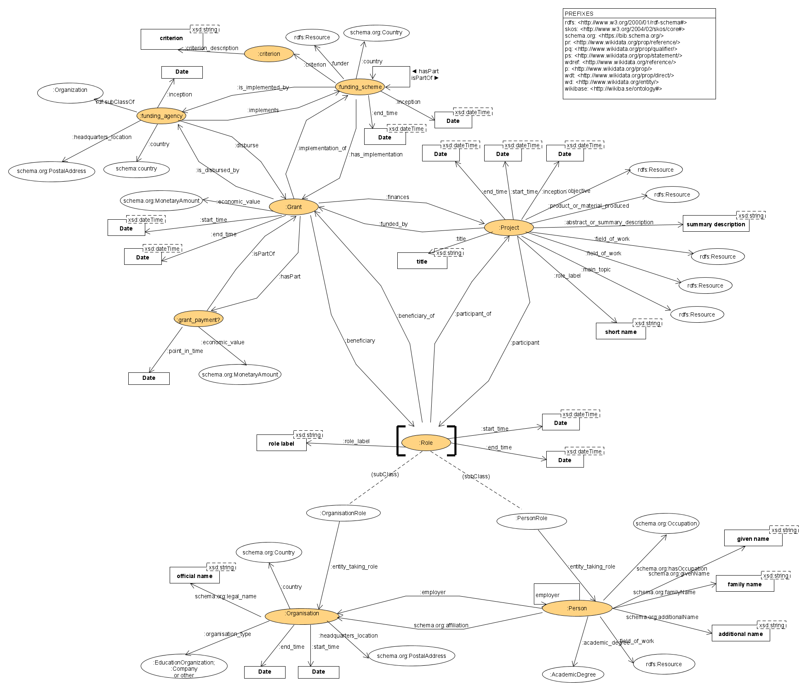

DINGO: a knowledge graph data model for projects and grants
(with specialisations for Wikidata and Schema.org)
Editors: * Diego Chialva * Alexis-Michel Mugabushaka * Andra Waagmeester * Thomas Baker * Dan Brickley * Eric Prud'hommeaux * Katherine Thornton * Peter Murray-Rust * Mark Thompson
Status of this document
This document contains the specification of the ontology/datamodel DINGO (Data Integration for Grant Ontology). The model was presented at the Meetup in Berlin on 17th-19th of June (WikiProject Wikidata for research), and discussed by a specific wroking group (whose memebrs are indicated as Editors). Further revision lead to the final version of this document.
This document is a stable document and may be used as reference material or cited from another document. Its aim is to draw attention to the specification and to promote its widespread deployment. This enhances the functionality and interoperability of data dealing with research and/or other cultural activities, and their funding.
Introduction
Researchers, scholars, funding agencies, face increasing pressure to report on impact, quality and sustainability of research, other technical and cultural projects, as well as of funding policies and practices. Policy debates in fact revolve more and more on data-driven assessments of the research and /or cultural landscape.
Such analyses and assessments exhibit a series of specific aspects:
They require the collection and processing of a large amount of data coming from a number of different sources (for example, founding agencies databases, bibliographic sources, project archives and reports, research and cultural prizes, …).
The various data must be combined and processed together to make useful inferences. This at the moment is done, if ever, in isolation by each actor and on a ad-hoc basis, which limit the (re-)usability of data.
The datamodels informing analogous data coming from different (but equivalent) sources -such as two different funding agencies operating with similar programs- are not standardized, which poses high barriers to the automatisation of linkage and re-use of data.
The format itself of data is often not standardized (several kind of repositories and information systems). The difficulty in merging data leads to a lack of interoperability.
The lack of analysis contextualisation and of comparison perspective between different realities in the research/cultural landscape due to the lack of interoperability and linkage between data limits the reach, insight and capacity of the analysis to inform strategic discussion.
Solutions to these problematic points would be beneficial to the whole interested community. This would require in primis
the definition of consensus data modelsdatamodels/ontologies
the adoption of technologies and standardization that are positioned toward interoperability and automatization.
We present in this publication an ontology/data modeldatamodel. We have called this ontology: DINGO, that is Data Integration and Extension for Grant Ontology. It is designed to provide an extensible interoperable framework for formally conceptualizing and expressing the relevant parts of the research/cultural landscapeladscape such that they can easily be shared between different actors and platforms. It is conceived to have sufficient richness of expression to satisfy complex requirements (see sections Aims of the model and Extensions and integrations of the model, while at the same time being simple enough to be useful for the simplest use cases.
General description and design decisions
The ontology presented here conceptualizes and represents part of the research/cultural landscape, with particular focus on the research/cultural activities and their funding.
We provide a graphical representation of the ontology:

The model is based on the following simple principles and specific relevant design decisions:
the model distinguishes six principal classes: Project, Grant, Funding Agency, FundingScheme, Role, Person, Organisation, Criterion;
a Project is an organised endeavour (collactive or individual) planned to reach a particular aim or achieve a result
a Grant is a disbursed fund payd to a recipient or beneficiary (a Participant) and the process for it
a Project may be funded by one or more Grants simultaneously or in sequence
a Grant may fund one or several Projects
Grants can be awarded to Person(s) or to Organisation(s), hence beneficiaries can be a Person or an Organisation
Projects can be participated by Person(s) or to Organisation(s), hence a participant, individuated by a Role, can be a Person or an Organisation
a participant (Person or Organisation) in a Project may not beneficiary of the Grant(s) funding the Project; accordingly, the model reflect that participants of Project and beneficiaries of Grant funding the same Project may be different
Funding Agencies are the organisations materially disbursing and administrating the Grant process
, note that they are typically distinguished from ultimate funders, which are entities establishing the agencies and/or the funding resources, and which are modeled in DINGO via the dg:funder predicate (Example: the ERC is a funding agency that has been established and works for the ultimate funder European Commission, which provides its budget)
Funding Schemes are specifications of Grant coverage, Grant eligibility, Grant reimbursement rates, Grant specific criteria for funding, Grant population targets, and similar features; such feature specifications constitute the Criterion to award funds (Grants)
Funding Schemes may be su-specifications of more general Funding schemes
Criteria can be of different nature, modeled in this ontology via different sub-classes, and multiple Criteria can coexist in a single FundingScheme
Aims of the model
The principal aim of the DINGO ontology is to provide a standardised description and format to share data between systems. The intended interoperability is both among systems curated/owned by different entities, and for data sharing between devices and platforms.
Special care has been devoted to minimize the efforts in applying/adopting the ontology by users. In particular, while the model has been created using Linked Data fundamentals, it is apt to different implementations, also of non-graph type, and thus it does not address specifically the optimization of graph inference and graph-based queries.
We would like to stress the practical aims that have moulded such ontology. We also present specifications of such ontology for existing knowledge graphs (namely, Wikidata and Schema.org), to given the right consideration also to relevant implementation aspects. This has also allowed us to prepare a pilot example of such a knowledge graph.
Extensions and integrations of the model
The ontology presented here conceptualizes and represents part of the research/cultural landscape, with particular focus on the research/cultural activities and their funding. It allows for and benefits from extensions with ontologies describing other specific aspects, such as for example the outputs or products of such research activities, which are not modeled by DINGO itself. Data models for those areas have been and are being developed (for example see FABIO concerning publications). Specularly, data models based on those ontologies can be integrated and extended via DINGO to conver also for funding information and data. To our knowledge the existing ontologies abut funding (FRAPO and the one used in Springer Nature SciGraph) are more limited in vocabulary, both in number of entities as well as richness of predicates, thus leading to a more partial conceptualisation of the knowledge area.
Serialisations
The examples presented in this document are written and serialised in Turtle. We have also provided a serialisation of the model written as Shape Expressions, which allow also for data validation in graph-based RDF implementations.
Data validation
We also provide a definition of the model in Shape Expression language, which is usable for data validation.
Normativity
The model should be normative in its definition and characterisations, but given the, at the moment, lack of standardisation in the available datasets and the notable differences among them, we prefer to adopt an “elastic” point of view on conformance.
By this we mean that if there exists classes and attributes in datasets conforming to the model ones they must be represented as indicated in this model. Otherwise, in absence of the relative pieces of data, certain classes and relative predicates may be left absent.
Terminology
We briefly list here the terms we will be using in the rest of this document to present and describe the model.
- Item An element of interest, typically represented by an IRI and associated to a graph node in graph-based representations of the model.
- Property A feature of a Resource with a particular data type. Properties can be both other Items, as well as literals such as a string, integer, date.
- Class Items are divided and classified in groups called “classes” and are related to them via typing. Classes are Items as well, and as such are individuated by IRIs. An element Item realisation of a Class is called an Instance.
- Type A special Property associating an Instance to the Class it belongs to.
Ontology Detailed Description
The namespace used for the ontology description is $prefOntology.
We describe here below in details the vocabulary (ontology) of DINGO. A synthetic one-sentence description of the vocabulary could be: Funders empower Funding Agencies implementing Funding Schemes, to provide Grants, which have Beneficiaries in various Roles, in partial Payments to Projects, which have Participants in various Roles, in order to advance knowledge and produce results and new outputs.
Prefixes
| Prefix | Namespace | Description |
|---|---|---|
| rdf | http://www.w3.org/1999/02/22-rdf-syntax-ns# | rdf-schema |
| rdfs | http://www.w3.org/2000/01/rdf-schema# | rdf-schema |
| schema | http://schema.org/ | schema.org |
| skos | http://www.w3.org/2004/02/skos/core# | skos-reference |
| wd | http://www.wikidata.org/entity/ | wikidata-namespaces |
| p | http://www.wikidata.org/prop/ | wikidata-namespaces |
| dg | DINGO namespace |
Classes
Grant
A disbursed fund paid to a recipient or beneficiary and the process for it.
- Predicates:
- dg:start_time;
- dg:end_time;
- dg:economic_value;
- dg:implementation_of;
- dg:finances;
- dg:disbursed_by;
- dg:beneficiary;
- dg:hasPart;
- dg:agency_identifier;
- rdfs:label;
- rdfs:comment;
- skos:altLabel;
GrantPayment
A single payment to a recipient or beneficiary within a Grant.
- Predicates:
- rdf:type;
- dg:point_in_time;
- dg:isPartOf;
- dg:agency_identifier;
- rdfs:label;
- rdfs:comment;
- skos:altLabel;
Project
An organised endeavour (collective or individual) planned to reach a particular aim or achieve a result.
- Predicates:
- dg:official_website;
- dg:participant;
- dg:inception;
- dg:start_time;
- dg:end_time;
- dg:title;
- dg:field_of_work;
- dg:main_topic;
- dg:objective;
- dg:product_or_material_produced;
- dg:abstract_or_summary_description;
- dg:funded_by;
- dg:short_name;
- dg:budget
- rdfs:label
- rdfs:comment;
- skos:altLabel;
Role
The function assumed by or ascribed to an entity (typically person, group of persons or organisation) in a particular situation. It can be used to precise or represent additional information about a relationship or property such as participation or membership.
Note: the class should be only used to derive subclasses.
- Predicates:
- dg:participant_of
- dg:beneficiary_of
- dg:start_time;
- dg:end_time;
- dg:role_label;
- dg:entity_taking_role;
- dg:agency_identifier;
- rdfs:label;
- rdfs:comment;
- skos:altLabel;
Equivalent Class: schema:Role
PersonRole
Function assumed by or ascribed to a person that takes part in something.
- Predicates:
- rdf:subClassOf;
- rdfs:label;
- rdfs:comment;
- skos:altLabel;
SubClass of: dg:Role
OrganisationRole
Function assumed by or ascribed to an organisation that takes part in something.
- Predicates:
- rdf:subClassOf;
- rdfs:label;
- rdfs:comment;
- skos:altLabel;
SubClass of: dg:Role
Person
A person (alive, dead, undead, or fictional).
- Predicates (specific for this ontology):
- schema:familyName;
- schema:givenName;
- schema:additionalName;
- dg:official_website;
- schema:hasOccupation; ATTENTION: ONLY PENDING.
- dg:academic_degree;
- dg:employer;
- dg:field_of_work;
- dg:orcid_id;
- dg:takes_role;
- schema:affiliation;
- rdfs:label;
- rdfs:comment;
- skos:altLabel;
- owl:equivalentClass;
Same Classes (owl:equivalentClass): schema:Person
Organisation
Social entity with a collective goal.
- Predicates:
- dg:inception;
- dg:start_time
- dg:end_time;
- schema:legal_name;
- dg:official_website;
- dg:country;
- dg:field_of_work;
- dg:headquarters_location;
- dg:grid_id;
- dg:short_name;
- rdfs:label;
- rdfs:comment;
- skos:altLabel;
Same Classes (owl:equivalentClass): schema:Organisation
Company
A commercial business.
SubClass of: dg:Organisation
EducationalOrganisation
Institution that provides education.
SubClass of: dg:Organisation
Same Classes (owl:equivalentClass): schema:EducationalOrganization
HigherEducationOrganisation
Place of postsecondary education (e.g., universities, vocational universities, community colleges, liberal arts colleges, institutes of technology, and others).
SubClass of: dg:Organisation
ResearchPerformingOrganisation
Organisations devoted to research activities.
SubClass of: dg:Organisation
HealthcareOrganisation
Organization that provides health care and related services.
SubClass of: dg:Organisation
Same Classes (owl:equivalentClass): schema:MedicalOrganization;
NonprofitOrganisation
Business entity that pays no income tax, as it furthers a religious, scientific or social cause, providing a public benefit.
SubClass of: dg:Organisation
FacilityOrganisation
A place providing for a particular purpose.
SubClass of: dg:Organisation
GovernmentalOrganisation
Organisation depending on a government or State.
SubClass of: dg:Organisation
ArchiveOrganisation
Institution that holds artifacts and other objects of scientific, artistic, cultural, historical, or other importance.
SubClass of: dg:Organisation
CulturalOrganisation
Cultural institution or cultural organization is an organization within a culture/subculture that works for the preservation or promotion of culture.
SubClass of: dg:Organisation
PerformingGroup
A performance group, such as a band, an orchestra, or a circus.
SubClass of: dg:Organisation
Same Classes (owl:equivalentClass): schema:PerformingGroup;
SportsOrganisation
Represents the class of all sports organizations, including sports teams, governing bodies, and sports associations.
SubClass of: dg:Organisation
Same Classes (owl:equivalentClass): schema:SportsOrganization
SupranationalOrganisation
International organisation with power and influence in the jurisdictions of its member states. Example: European Union.
SubClass of: dg:Organisation
IntergovernmentalOrganization
Organization composed primarily of sovereign states. Example: United Nations.
SubClass of: dg:Organisation
FundingAgency
Organisation that materially disburse and administer the Grant process.
- Predicates:
- dg:inception;
- dg:end_time;
- dg:official_website;
- dg:implements;
- dg:disburses;
- dg:crossref_id;
- dg:short_name;
- rdfs:label;
- rdfs:comment;
- skos:altLabel;
SubClass of: dg:Organisation
FundingScheme
Plan, design, and/or program that determines and organizes the funding.
- Predicates:
- dg:official_website;
- dg:inception;
- dg:start_time;
- dg:end_time;
- schema:legal_name;
- dg:funder;
- dg:implemented_by;
- dg:has_implementation;
- dg:criterion
- dg:hasPart
- dg:isPartOf
- dg:agency_identifier;
- dg:short_name;
- rdfs:label;
- rdfs:comment;
- skos:altLabel;
Criterion
Specification of Grant coverage, Grant eligibility, Grant reimbursement rates, Grant specific criteria for funding, Grant population targets, and similar features.
Note: the class should be only used to derive subclasses.
- Predicates:
- dg:criterion_description;
- rdfs:label;
- rdfs:comment;
- skos:altLabel;
ThematicCriterion
Grants are awarded on the basis of specified thematic/subject areas or well-defined areas of investigation indicated by the funding body.
- Predicates:
- dg:field_of_work;
- dg:main_topic;
- rdfs:label;
- rdfs:comment;
- skos:altLabel;
SubClass of: dg:Criterion
OrganisationalCriterion
Grants are awarded on the basis of specified organisational form of the project, for instance demanding for participation of different research groups (synergy).
- Predicates:
- rdfs:label;
- rdfs:comment;
- skos:altLabel;
SubClass of: dg:Criterion
CareerPurposeCriterion
Grants are awarded on the basis of career-related goals and applicants must be at a defined career stage (defined academic degree) to be achieved.
- Predicates:
- dg:academic_degree;
- rdfs:label;
- rdfs:comment;
- skos:altLabel;
SubClass of: dg:Criterion
InfrastructurePurposeCriterion
Grants are awarded to cover for the expenses of infrastructure.
- Predicates:
- rdfs:label;
- rdfs:comment;
- skos:altLabel;
SubClass of: dg:Criterion
CareerStageCriterion
Grants are awarded on the basis of career stage limits.
- Predicates:
- dg:baseline_academic_degree;
- dg:min_years_from_baseline_degree;
- dg:max_years_from_baseline_degree;
- dg:min_research_years;
- dg:excluded_academic_degree;
- rdfs:label;
- rdfs:comment;
- skos:altLabel;
SubClass of: dg:Criterion
EmploymentCriterion
Grants are awarded on the basis of employment conditions by an organisation eligible for funding at the time of applying or receiving the funds.
- Predicates:
- dg:percentage_employment;
- rdfs:label;
- rdfs:comment;
- skos:altLabel;
SubClass of: dg:Criterion
AgeCriterion
Grants are awarded on the basis of age limits.
- Predicates:
- dg:min_age;
- dg:max_age;
- rdfs:label;
- rdfs:comment;
- skos:altLabel;
SubClass of: dg:Criterion
WorkingTimeCriterion
Grants are awarded on the basis of percentage of work time specifically devoted to the funded research.
- Predicates:
- dg:percentage_working_time;
- rdfs:label;
- rdfs:comment;
- skos:altLabel;
SubClass of: dg:Criterion
GeographicCriterion
Grants are awarded on the basis of geographic areas, either where the project has to be implemented, or where the researcher must have been operating before applying for funding, or where the participants must be resident or citizens.
- Predicates:
- dg:implementation_country;
- dg:person_location;
- dg:organisation_location;
- rdfs:label;
- rdfs:comment;
- skos:altLabel;
SubClass of: dg:Criterion
BottomUpCriterion
Grants are awarded on the basis of the research proposal itself without restriction on theme/subject or research area. The funding body does not specifies beforehand missions, targets nor topics of the research projects that can apply.
- Predicates:
- rdfs:label;
- rdfs:comment;
- skos:altLabel;
SubClass of: dg:Criterion
AcademicDegree
College or university diploma
- Predicates:
- dg:degree_title;
- rdfs:label;
- rdfs:comment;
- skos:altLabel;
Same Classes (owl:equivalentClass): https://www.wikidata.org/entity/Q189533
Predicates/Properties
economic_value
Amount in a specific currency (relationship between the item and a value expressed in a currency unit).
Domain: rdfs:Resource
Range: schema:MonetaryAmount
implementation_of
The relationship between the grant (subject) and the decision, plan, program (object) that the grant is the concrete realisation of. Inverse relation is dg:has_implementation .
Domain: dg:Grant
Range: dg:FundingScheme
has_implementation
The inverse relation of dg:implementation_of .
Domain: dg:FundingScheme
Range: dg:Grant
implements
The relationship between the funding agency (subject) and the decision, plan, program (object) that the funding agency implements and administers. Inverse relation is dg:implemented_by .
Domain: dg:FundingAgency
Range: dg:FundingScheme
implemented_by
The inverse relation of dg:implements .
Domain: dg:FundingScheme
Range: dg:FundingAgency
finances
The relation between the Grant (subject) and the Project (object). Inverse relation is dg:funded_by .
Domain: dg:Grant
Range: dg:Project
funded_by
The inverse relation of dg:finances.
Domain: dg:Grant
Range: dg:Project
beneficiary
The relation between the Grant (subject) and a (one of the) person(s) or organisation(s) beneficiary of it identified by his/her/its role. The inverse relation is dg:beneficiary_of .
Domain: dg:Grant
Range: dg:Role
beneficiary_of
Inverse relation of dg:beneficiary .
Domain: dg:Role
Range: dg:Grant
agency_identifier
The identifiers used by the funding agency to denote an item (grant, payment, project, ….). Typically these are not universal identifiers.
Domain: {dg:Grant, dg:GrantPayment, dg:Project}
Range: [xsd:string]]https://www.w3.org/TR/xmlschema-2/#string)
participant
The relation between the Project (subject) and a (one of the) person(s) or organisation(s) contributing to or taking part in it identified by his/her/its role. The inverse relation is dg:participant_of .
Domain: dg:Project
Range: dg:Role
participant_of
Inverse relation of dg:participant .
Domain: dg:Role
Range: dg:Project
hasPart
The relation between a superset and its direct subset(s). Indicates an item that is a part (also in generalised sense) of the subject item. The inverse relation is dg:isPartOf
Domain: rdfs:Resource
Range: rdfs:Resource
isPartOf
The relation inverse of dg:hasPart.
Domain: rdfs:Resource
Range: rdfs:Resource
point_in_time
The moment in time when an event occurs.
Domain: rdfs:Resource
Range: xsd:date OR xsd:dateTime
Equivalent property: https://www.wikidata.org/prop/P585
inception
Date or point in time when the subject was founded/created.
Domain: rdfs:Resource
Range: xsd:date OR xsd:dateTime
Equivalent property: https://www.wikidata.org/prop/P571
start_time
The time an item starts to exist/operate or a statement starts being valid.
Domain: rdfs:Resource
Range: xsd:date OR xsd:dateTime
end_time
The time an item ceases to exist or a statement stops being valid.
Domain: rdfs:Resource
Range: xsd:date OR xsd:dateTime
Equivalent property: https://www.wikidata.org/prop/P582
title
The title of a project (original or translated).
Domain: dg:Project
Range: [xsd:string]]https://www.w3.org/TR/xmlschema-2/#string)
field_of_work
Specialisation of a person, project or organisation.
Domain: dg:Project
Range: rdfs:Resource
main_topic
Primary topic of a project. Use to individuate more precisely the subject of a project. For instance, a research project my have “field of work” = Classical Studies and “main topic”=Homer Iliades.
Domain: dg:Project
Range: rdfs:Resource
objective
Desired result or outcome.
Domain: dg:Project
Range: rdfs:Resource
product_or_material_produced
Material, product or outcome produced by a Project.
Domain: dg:Project
Range: rdfs:Resource
abstract_or_summary_description
Short summary description of a project.
Domain: dg:Project
Range: [xsd:string]]https://www.w3.org/TR/xmlschema-2/#string)
budget
Amount of money necessary or planned for a determined purpose.
Domain: rdfs:Resource
Range: schema:MonetaryAmount
role_label
Label (name) of a Role.
Domain: dg:Role
Range: [xsd:string]]https://www.w3.org/TR/xmlschema-2/#string)
role_type
Item representing the specific class of a Role.
Domain: dg:Role
Range: rdfs:Resource
entity_taking_role
The person or organisation or entity (object) assuming or to whom is assigned the role (subject).
Domain: dg:Role
Range: dg:Person U dg:Organisation
takes_role
The role (object) assumed or assigned to a person or organisation or entity (subject).
Domain: dg:Person U dg:Organisation
Range: dg:Role
academic_degree
Qualification awarded to the person taking the role by a higher education organisation, normally at a college or university.
Domain: dg:Person
Range: dg:AcademicDegree
Equivalent property: https://www.wikidata.org/prop/P512
employer
A person or company that provides a job (possibly paying wages or a salary) to the person taking the role.
Domain: dg:Person
Range: {dg:Person, dg:Organisation}
country
Country where the organisation is officially located.
Domain: dg:Organisation
Range: schema:Country
headquarters_location
Address of the headquarters of the organisation.
Domain: dg:Organisation
Range: schema:PostalAddress
short_name
Acronym or short name of an organisation or project or funding scheme.
Domain: {dg:Organisation, dg:Project, dg:FundingScheme}
Range: [xsd:string]]https://www.w3.org/TR/xmlschema-2/#string)
official_website
URL of the official website of an item.
Domain: {dg:Organisation, dg:Person, dg:FundingAgency, dg:Project, dg:FundingScheme}
Range: schema:url rdfs:Literal
Equivalent property: https://www.wikidata.org/prop/P856
disburses
The relation between the funding agency (subject) and the disbursed grant (object). The inverse relation is dg:disbursed_by.
Domain: dg:FundingAgency
Range: dg:Grant
disbursed_by
Inverse relation of dg:disburses.
Domain: dg:Grant
Range: dg:FundingAgency
funder
The ultimate funder who decided and is ultimately responsible for the funding scheme. (Example: FundingScheme Horizon2020 dg:funder European Commission).
Domain: dg:FundingScheme
Range: rdfs:Resource
criterion
Property by which a distinction or classification is made. When applied to, for instance, FundingScheme items it indicates criterion item establishing the eligibility conditions, target and other relevant points of the FundingScheme to fund an application.
Domain: dg:FundingScheme
Range: dg:Criterion
criterion_description
Description of the eligibility, targets and other relevant points of the FundingScheme.
Domain: dg:FundingScheme
Range: [xsd:string]]https://www.w3.org/TR/xmlschema-2/#string)
agency_identifier
Identifier (for example of Project, Grant, GrantPayment, PersonRole instance, OrganizationRole instance or FundingScheme) in the database/archive of the funding agency.
Domain: {dg:Grant, dg:GrantPayment, dg:Project, dg:Role, dg:FundingScheme}
Range: [xsd:string]]https://www.w3.org/TR/xmlschema-2/#string)
grid_id
Institutional identifier from the GRID.ac global research identifier database.
Domain: dg:Organisation
Range: [xsd:string]]https://www.w3.org/TR/xmlschema-2/#string)
crossref_id
Identifier for an organisation that funds research, in the Crossref registry.
Domain: dg:FundingAgency
Range: [xsd:string]]https://www.w3.org/TR/xmlschema-2/#string)
wikidata_item_id
Identifier for a class or item existing in Wikidata.
Domain: {dg:Grant, dg:GrantPayment, dg:Project, dg:Role, dg:Person, dg:Organisation, dg:FundingAgency, dg:FundingScheme, dg:AcademicDegree}
Range: [xsd:string]]https://www.w3.org/TR/xmlschema-2/#string)
orcid_id
Nonproprietary alphanumeric code to uniquely identify scientific and other academic authors.
Domain: dg:Person
Range: [xsd:string]]https://www.w3.org/TR/xmlschema-2/#string)
baseline_academic_degree
Academic degree used as minimal/reference point for establising a set of age limits or other classification.
Domain: dg:CareerStageCriterion
Range: dg:AcademicDegree
min_years_from_baseline_degree
Minimum number of years counting from the year of when the baseline academic degree was obtained.
Domain: dg:CareerStageCriterion
Range: xsd:positiveInteger
max_years_from_baseline_degree
Maximum number of years counting from the year of when the baseline academic degree was obtained.
Domain: dg:CareerStageCriterion
Range: xsd:positiveInteger
min_research_years
Minimum number of research years required.
Domain: dg:CareerStageCriterion
Range: xsd:positiveInteger
excluded_academic_degree
Academic degree possessing which the subject of the statement cannot apply to the funding program.
Domain: dg:CareerStageCriterion
Range: dg:AcademicDegree
percentage_employment
Minimum percentage of employment required (for example to be eligible for funding).
Domain: dg:EmploymentCriterion
Range: xsd:positiveInteger
min_age
Minimum age required.
Domain: dg:AgeCriterion
Range: xsd:positiveInteger
max_age
Maximum age allowed.
Domain: dg:AgeCriterion
Range: xsd:positiveInteger
implementation_country
Country or geographical administrative entity where the project must be implemented.
Domain: dg:GeographicCriterion
Range: schema:Country U dg:SupranationalOrganisation
person_location
Country or geographical administrative entity where the person must reside or be citizen or have undertaken research up to the moment of applying for funding.
Domain: dg:GeographicCriterion
Range: schema:Country U dg:SupranationalOrganisation
organisation_location
Country or geographical administrative entity where an organisation must be established to apply for funding.
Domain: dg:GeographicCriterion
Range: schema:Country U dg:SupranationalOrganisation
percentage_working_time
Amount of working time in percentage.
Domain: dg:WorkingTimeCriterion
Range: xsd:positiveInteger
degree_title
Title denoting the academic degree.
Domain: dg:AcademicDegree
Range: [xsd:string]]https://www.w3.org/TR/xmlschema-2/#string)
Ontology serialisation in turtle language
@prefix rdf: <http://www.w3.org/1999/02/22-rdf-syntax-ns#>
@prefix rdfs: <http://www.w3.org/2000/01/rdf-schema>
@prefix wd: <http://www.wikidata.org/entity/>
@prefix p: <http://www.wikidata.org/prop/>
@prefix owl: <http://www.w3.org/2002/07/owl#>
@prefix skos: <http://www.w3.org/2004/02/skos/core#>
@prefix schema: <http://schema.org/>
dg:Grant a rdfs:Class
rdfs:label "Grant" ;
rdfs:comment "The class for grant: a disbursed fund payd to a recipient or beneficiary (a Participant) and the process for it." ;
rdfs:isDefinedBy dg: .
dg:GrantPayment a rdfs:Class
rdfs:label "GrantPayment" ;
rdfs:comment "The class for grant payments: a single payment to a recipient or beneficiary within a Grant." ;
rdfs:isDefinedBy dg: .
dg: Project a rdfs:Class
rdfs:label "Project" ;
rdfs:comment "The class for projects: an organised endeavour (collactive or individual) planned to reach a particular aim or achieve a result." ;
rdfs:isDefinedBy dg: .
dg:Role a rdfs:Class
rdfs:label "Role" ;
rdfs:comment "The class for roles: the function assumed by or ascribed to an entity (typically person, group of persons or organisation) in a particular situation.
It can be used to precise or represent additional information about a relationship or property such as participation or membership. The class should be only used to derive subclasses." ;
rdfs:isDefinedBy dg: ;
owl:equivalentClass schema:Role .
dg:PersonRole a rdfs:Class
rdfs:label "PersonRole" ;
rdfs:comment "The class for person roles: function assumed by or ascribed to a person that takes part in something." ;
rdfs:isDefinedBy dg: ;
rdfs:subClassOf dg:Role .
dg:OrganisationRole a rdfs:Class
rdfs:label "OrganisationRole" ;
rdfs:comment "The class for organisation roles: function assumed by or ascribed to an organisation that takes part in something." ;
rdfs:isDefinedBy dg: ;
rdfs:subClassOf dg:Role .
dg:Person a rdfs:Class
rdfs:label "Person" ;
rdfs:comment "The class for persons: alive, dead, undead, or fictional." ;
rdfs:isDefinedBy dg: ;
owl:equivalentClass schema:Person .
dg:Organisation a rdfs:Class
rdfs:label "Organisation" ;
rdfs:comment "The class for organisations: social entities with a collective goal." ;
rdfs:isDefinedBy dg: ;
owl:equivalentClass schema:Organisation .
dg:Company a rdfs:Class
rdfs:label "Company" ;
rdfs:comment "A commercial business." ;
rdfs:isDefinedBy dg: ;
owl:equivalentClass schema:Organisation ;
rdfs:subClassOf dg:Organisation .
dg:EducationOrganisation a rdfs:Class
rdfs:label "EducationOrganisation" ;
rdfs:comment "Institution that provides education." ;
rdfs:isDefinedBy dg: ;
owl:equivalentClass schema:EducationalOrganisation ;
rdfs:subClassOf dg:Organisation .
dg:HigherEducationOrganisation a rdfs:Class
rdfs:label "HigherEducationOrganisation" ;
rdfs:comment "Place of postsecondary education (e.g., universities, vocational universities, community colleges, liberal arts colleges, institutes of technology, and others)." ;
rdfs:isDefinedBy dg: ;
rdfs:subClassOf dg:Organisation .
dg:ResearchPerformingOrganisation a rdfs:Class
rdfs:label "ResearchPerformingOrganisation" ;
rdfs:comment "Organisations devoted to research activities." ;
rdfs:isDefinedBy dg: ;
rdfs:subClassOf dg:Organisation .
dg:HealthcareOrganisation a rdfs:Class
rdfs:label "HealthcareOrganisation" ;
rdfs:comment "Organization that provides health care and related services." ;
rdfs:isDefinedBy dg: ;
owl:equivalentClass schema:MedicalOrganization ;
rdfs:subClassOf dg:Organisation .
dg:NonprofitOrganisation a rdfs:Class
rdfs:label "NonprofitOrganisation" ;
rdfs:comment "Business entity that pays no income tax, as it furthers a religious, scientific or social cause, providing a public benefit." ;
rdfs:isDefinedBy dg: ;
rdfs:subClassOf dg:Organisation .
dg:FacilityOrganisation a rdfs:Class
rdfs:label "FacilityOrganisation" ;
rdfs:comment "A place providing for a particular purpose." ;
rdfs:isDefinedBy dg: ;
rdfs:subClassOf dg:Organisation .
dg:GovernmentalOrganisation a rdfs:Class
rdfs:label "GovernmentalOrganisation" ;
rdfs:comment "Organisation or agency depending on a government or State." ;
rdfs:isDefinedBy dg: ;
owl:equivalentClass schema:GovernmentOrganization ;
rdfs:subClassOf dg:Organisation .
dg:ArchiveOrganisation a rdfs:Class
rdfs:label "ArchiveOrganisation" ;
rdfs:comment "Institution that holds artifacts and other objects of scientific, artistic, cultural, historical, or other importance." ;
rdfs:isDefinedBy dg: ;
rdfs:subClassOf dg:Organisation .
dg:CulturalOrganisation a rdfs:Class
rdfs:label "CulturalOrganisation" ;
rdfs:comment "Cultural institution or cultural organization is an organization within a culture/subculture that works for the preservation or promotion of culture." ;
rdfs:isDefinedBy dg: ;
rdfs:subClassOf dg:Organisation .
dg:PerformingGroup a rdfs:Class
rdfs:label "PerformingGroup" ;
rdfs:comment "A performance group, such as a band, an orchestra, or a circus." ;
rdfs:isDefinedBy dg: ;
owl:equivalentClass schema:PerformingGroup ;
rdfs:subClassOf dg:Organisation .
dg:SportsOrganisation a rdfs:Class
rdfs:label "SportsOrganisation" ;
rdfs:comment "Represents the class of all sports organizations, including sports teams, governing bodies, and sports associations." ;
rdfs:isDefinedBy dg: ;
owl:equivalentClass schema:SportsOrganisation ;
rdfs:subClassOf dg:Organisation .
dg:SupranationalOrganisation a rdfs:Class
rdfs:label "SupranationalOrganisation" ;
rdfs:comment "International organisation with power and influence in the jurisdictions of its member states. Example: European Union." ;
rdfs:isDefinedBy dg: ;
rdfs:subClassOf dg:Organisation .
dg:IntergovernmentalOrganisation a rdfs:Class
rdfs:label "IntergovernmentalOrganisation" ;
rdfs:comment "Organization composed primarily of sovereign states. Example: United Nations." ;
rdfs:isDefinedBy dg: ;
rdfs:subClassOf dg:Organisation .
dg:FundingAgency a rdfs:Class
rdfs:label "FundingAgency" ;
rdfs:comment "The class for funding agencies: organisation that materially disburse and administer the Grant process." ;
rdfs:isDefinedBy dg: ;
rdfs:subClassOf dg:Organisation.
dg:FundingScheme a rdfs:Class
rdfs:label "FundingScheme" ;
rdfs:comment "The class for funding schemes: plans, designs, and/or programs that determines and organizes the funding." ;
rdfs:isDefinedBy dg: .
dg:Criterion a rdfs:Class
rdfs:label "Criterion" ;
rdfs:comment "Specification of Grant coverage, Grant eligibility, Grant reimbursement rates, Grant specific criteria for funding, Grant population targets, and similar features." ;
rdfs:isDefinedBy dg: .
dg:ThematicCriterion a rdfs:Class
rdfs:label "ThematicCriterion" ;
rdfs:comment "Grants are awarded to projects on the basis of specified thematic/subject areas or well-defined areas of investigation indicated by the funding body." ;
rdfs:isDefinedBy dg: ;
rdfs:subClassOf dg:Criterion.
dg:OrganisationalCriterion a rdfs:Class
rdfs:label "OrganisationalCriterion" ;
rdfs:comment "Grants are awarded on the basis of specified organisational form of the project, for instance demanding for participation of different research groups (synergy)." ;
rdfs:isDefinedBy dg: ;
rdfs:subClassOf dg:Criterion.
dg:CareerPurposeCriterion a rdfs:Class
rdfs:label "CareerPurposeCriterion" ;
rdfs:comment "Grants are awarded on the basis of career-related goals and applicants must be at a defined career stage (defined academic degree) to be achieved." ;
rdfs:isDefinedBy dg: ;
rdfs:subClassOf dg:Criterion.
dg:InfrastructurePurposeCriterion a rdfs:Class
rdfs:label "InfrastructurePurposeCriterion" ;
rdfs:comment "Grants are awarded to cover for the expenses of infrastructure." ;
rdfs:isDefinedBy dg: ;
rdfs:subClassOf dg:Criterion.
dg:CareerStageCriterion a rdfs:Class
rdfs:label "CareerStageCriterion" ;
rdfs:comment "Grants are awarded to projects on the basis of career stage limits." ;
rdfs:isDefinedBy dg: ;
rdfs:subClassOf dg:Criterion.
dg:EmploymentCriterion a rdfs:Class
rdfs:label "EmplymentCriterion" ;
rdfs:comment "Grants are awarded on the basis of employment conditions by an organisation eligible for funding at the time of applying or receiving the funds." ;
rdfs:isDefinedBy dg: ;
rdfs:subClassOf dg:Criterion.
dg:AgeCriterion a rdfs:Class
rdfs:label "AgeCriterion" ;
rdfs:comment "Grants are awarded to projects on the basis of age limits." ;
rdfs:isDefinedBy dg: ;
rdfs:subClassOf dg:Criterion.
dg:WorkingTimeCriterion a rdfs:Class
rdfs:label "WorkingTimeCriterion" ;
rdfs:comment "Grants are awarded to projects on the basis of percentage of work time specifically devoted to the funded research." ;
rdfs:isDefinedBy dg: ;
rdfs:subClassOf dg:Criterion.
dg:GeographicCriterion a rdfs:Class
rdfs:label "GeographicCriterion" ;
rdfs:comment "Grants are awarded to projects on the basis of geographic areas, either where the project has to be implemented, or where the researcher must have been operating before applying for funding, or where the participants must be resident or citizens." ;
rdfs:isDefinedBy dg: ;
rdfs:subClassOf dg:Criterion.
dg:BottomUpCriterion a rdfs:Class
rdfs:label "BottomUpCriterion" ;
rdfs:comment "Grants are awarded to projects on the basis of the research proposal itself without restriction on theme/subject or research area. The funding body does not specifies beforehand missions, targets nor topics of the research projects that can apply." ;
rdfs:isDefinedBy dg: ;
rdfs:subClassOf dg:Criterion.
dg:AcademicDegree a rdfs:Class
rdfs:label "AcademicDegree" ;
rdfs:comment "The class for academic degrees: college or university diploma." ;
rdfs:isDefinedBy dg: ;
owl:equivalentClass wd:Q189533 .
dg:economic_value a rdf:Property ;
rdfs:label "economic_value" ;
rdfs:comment "Amount in a specific currency (relationship between the item and a value expressed in a currency unit)." ;
rdfs:domain rdfs:Resource ;
rdfs:range schema:MonetaryAmount ;
rdfs:isDefinedBy dg: .
dg:implementation_of a rdf:Property ;
rdfs:label "implementation_of" ;
rdfs:comment "The relationship between the grant (subject) and the decision, plan, program (object) that the grant is the concrete realisation of." ;
rdfs:domain dg:Grant ;
rdfs:range dg:FundingScheme ;
owl:inverseOf dg:has_implementation ;
rdfs:isDefinedBy dg: .
dg:has_implementation a rdf:Property ;
rdfs:label "has_implementation" ;
rdfs:comment "The relationship between the decision, plan, program (subject) and the grant (object) that the grant is the concrete realisation of." ;
rdfs:domain dg:FundingScheme ;
rdfs:range dg:Grant ;
owl:inverseOf dg:implementation_of ;
rdfs:isDefinedBy dg: .
dg:implements a rdf:Property ;
rdfs:label "implements" ;
rdfs:comment "The relationship between the funding agency (subject) and the decision, plan, program (object) that the funding agency implements and administers." ;
rdfs:domain dg:FundingAgency ;
rdfs:range dg:FundingScheme ;
owl:inverseOf dg:implemented_by ;
rdfs:isDefinedBy dg: .
dg:implemented_by a rdf:Property ;
rdfs:label "implemented_by" ;
rdfs:comment "The relationship between the decision, plan, program (subject) and the funding agency (object) that the funding agency implements and administers." ;
rdfs:domain dg:FundingScheme ;
rdfs:range dg:FundingAgency ;
owl:inverseOf dg:implements ;
rdfs:isDefinedBy dg: .
dg:finances a rdf:Property ;
rdfs:label "finances" ;
rdfs:comment "The relation between the Grant (subject) and the Project (object)." ;
rdfs:domain dg:Grant ;
rdfs:range dg:Project ;
owl:inverseOf dg:funded_by ;
rdfs:isDefinedBy dg: .
dg:funded_by a rdf:Property ;
rdfs:label "funded_by" ;
rdfs:comment "The relation between the Grant (subject) and the Project (object)." ;
rdfs:domain dg:Project ;
rdfs:range dg:Grant ;
owl:inverseOf dg:finances ;
rdfs:isDefinedBy dg: .
dg:beneficiary a rdf:Property ;
rdfs:label "beneficiary" ;
rdfs:comment "The relation between the Grant (subject) and a (one of the) person(s) or organisation(s) receiving beneficts from it identified by his/her/its role." ;
rdfs:domain dg:Grant ;
rdfs:range dg:Role ;
owl:inverseOf dg:beneficiary_of ;
rdfs:isDefinedBy dg: .
dg:beneficiary_of a rdf:Property ;
rdfs:label "beneficiary_of" ;
rdfs:comment "The relation between a (one of the) person(s) or organisation(s) receiving benefits from a Grant identified by his/her/its role (subject), and the Grant." ;
rdfs:domain dg:Role ;
rdfs:range dg:Grant ;
owl:inverseOf dg:beneficiary ;
rdfs:isDefinedBy dg: .
dg:participant a rdf:Property ;
rdfs:label "participant" ;
rdfs:comment "The relation between the Project (subject) and a (one of the) person(s) or organisation(s) contributing to or taking part in it identified by his/her/its role." ;
rdfs:domain dg:Project ;
rdfs:range dg:Role ;
owl:inverseOf dg:participant_of ;
rdfs:isDefinedBy dg: .
dg:participant_of a rdf:Property ;
rdfs:label "participant_of" ;
rdfs:comment "The relation between a (one of the) person(s) or organisation(s) participant of a Project identified by his/her/its role (subject), and the Project." ;
rdfs:domain dg:Role ;
rdfs:range dg:Project ;
owl:inverseOf dg:participant ;
rdfs:isDefinedBy dg: .
dg:hasPart a rdf:Property ;
rdfs:label "hasPart" ;
rdfs:comment "The relation between a superset and its direct subset(s). Indicates an item that is a part (also in generalised sense) of the subject item." ;
rdfs:domain rdfs:Resource ;
rdfs:range rdfs:Resource ;
owl:inverseOf dg:isPartOf ;
rdfs:isDefinedBy dg: .
dg:isPartOf a rdf:Property ;
rdfs:label "isPartOf" ;
rdfs:comment "The relation between a subset and its direct superset(s). Indicates an item that is a part (also in generalised sense) of the object item." ;
rdfs:domain rdfs:Resource ;
rdfs:range rdfs:Resource ;
owl:inverseOf dg:hasPart ;
rdfs:isDefinedBy dg: .
dg:point_in_time a rdf:Property ;
rdfs:label "point_in_time" ;
rdfs:comment "The moment in time when an event occurs." ;
rdfs:domain rdfs:Resource ;
rdfs:range [xsd:date, xsd:dateTime] ;
owl:equivalentProperty p:P585 ;
rdfs:isDefinedBy dg: .
dg:inception a rdf:Property ;
rdfs:label "inception" ;
rdfs:comment "Date or point in time when the subject was founded/created." ;
rdfs:domain rdfs:Resource ;
rdfs:range [xsd:date, xsd:dateTime] ;
owl:equivalentProperty p:P571 ;
rdfs:isDefinedBy dg: .
dg:start_time a rdf:Property ;
rdfs:label "start_time" ;
rdfs:comment "The time an item starts to exist/operate or a statement starts being valid." ;
rdfs:domain rdfs:Resource ;
rdfs:range [xsd:date, xsd:dateTime] ;
rdfs:isDefinedBy dg: .
dg:end_time a rdf:Property ;
rdfs:label "end_time" ;
rdfs:comment "The time an item ceases to exist or a statement stops being valid." ;
rdfs:domain rdfs:Resource ;
rdfs:range [xsd:date, xsd:dateTime] ;
owl:equivalentProperty p:P582 ;
rdfs:isDefinedBy dg: .
dg:title a rdf:Property ;
rdfs:label "title" ;
rdfs:comment "The title of a project (original or translated)." ;
rdfs:domain dg:Project ;
rdfs:range xsd:string ;
rdfs:isDefinedBy dg: .
dg:field_of_work a rdf:Property ;
rdfs:label "title" ;
rdfs:comment "Specialisation of a person, project or organisation." ;
rdfs:domain dg:Project ;
rdfs:range rdfs:Resource ;
rdfs:isDefinedBy dg: .
dg:objective a rdf:Property ;
rdfs:label "objective" ;
rdfs:comment "Desired result or outcome." ;
rdfs:domain dg:Project ;
rdfs:range rdfs:Resource ;
rdfs:isDefinedBy dg: .
dg:product_or_material_produced a rdf:Property ;
rdfs:label "product_or_material_produced" ;
rdfs:comment "Material, product or outcome produced by a Project." ;
rdfs:domain dg:Project ;
rdfs:range rdfs:Resource ;
rdfs:isDefinedBy dg: .
dg:abstract_or_summary_description a rdf:Property ;
rdfs:label "abstract_or_summary_description" ;
rdfs:comment "Short summary description of a project." ;
rdfs:domain dg:Project ;
rdfs:range xsd:string ;
rdfs:isDefinedBy dg: .
dg:role_label a rdf:Property ;
rdfs:label "role_label" ;
rdfs:comment "Label (name) of a Role." ;
rdfs:domain dg:Role ;
rdfs:range xsd:string ;
rdfs:isDefinedBy dg: .
dg:role_type a rdf:Property ;
rdfs:label "role_type" ;
rdfs:comment "Item representing the specific class of a Role." ;
rdfs:domain dg:Role ;
rdfs:range rdfs:Resource ;
rdfs:isDefinedBy dg: .
dg:person_taking_role a rdf:Property ;
rdfs:label "person_taking_role" ;
rdfs:comment "The person (object) assuming or to whom is assigned the role (subject)." ;
rdfs:domain dg:Role ;
rdfs:range rdfs:Person ;
rdfs:isDefinedBy dg: .
dg:academic_degree a rdf:Property ;
rdfs:label "academic_degree" ;
rdfs:comment "Qualification awarded to the person taking the role by a higher education organisation, normally at a college or university." ;
rdfs:domain dg:Person ;
rdfs:range dg:AcademicDegree ;
owl:equivalentProperty p:P512 ;
rdfs:isDefinedBy dg: .
dg:employer a rdf:Property ;
rdfs:label "employer" ;
rdfs:comment "A person or company that provides a job (possibly paying wages or a salary) to the person taking the role." ;
rdfs:domain dg:PersonRole ;
rdfs:range dg:Person ;
rdfs:range dg:Organisation ;
rdfs:isDefinedBy dg: .
dg:organisation_taking_role a rdf:Property ;
rdfs:label "organisation_taking_role" ;
rdfs:comment "The organisation (object) assuming or to whom is assigned the role (subject)." ;
rdfs:domain dg:OrganisationRole ;
rdfs:range dg:Organisation ;
rdfs:isDefinedBy dg: .
dg:country a rdf:Property ;
rdfs:label "country" ;
rdfs:comment "Country where the organisation is located ufficially." ;
rdfs:domain dg:Organisation ;
rdfs:range schema:Country ;
rdfs:isDefinedBy dg: .
dg:headquarters_location a rdf:Property ;
rdfs:label "headquarters_location" ;
rdfs:comment "Address of the headquarters of the organisation." ;
rdfs:domain dg:Organisation ;
rdfs:range schema:PostalAddress ;
rdfs:isDefinedBy dg: .
dg:organisation_type a rdf:Property ;
rdfs:label "organisation_type" ;
rdfs:comment "Specific class of the organisation."
rdfs:range dg:Company ;
rdfs:range dg:EducationOrganisation ;
rdfs:range dg:HigherEducationOrganisation ;
rdfs:range dg:ResearchPerformingOrganisation ;
rdfs:range dg:HealthcareOrganisation ;
rdfs:range dg:NonprofitOrganisation ;
rdfs:range dg:FacilityOrganisation ;
rdfs:range dg:GovernmentalOrganisation ;
rdfs:range dg:ArchiveOrganisation ;
rdfs:range dg:PerformingGroup ;
rdfs:range dg:SportsOrganisation ;
rdfs:isDefinedBy dg: .
dg:official_website a rdf:Property ;
rdfs:label "official_website" ;
rdfs:comment "URL of the official website of an item." ;
rdfs:domain dg:Organisation ;
rdfs:domain dg:Person ;
rdfs:domain dg:FundingAgency ;
rdfs:domain dg:Project ;
rdfs:domain dg:FundingScheme ;
rdfs:range schema:url ;
owl:equivalentProperty p:P856 ;
rdfs:isDefinedBy dg: .
dg:short_name a rdf:Property ;
rdfs:label "short_name" ;
rdfs:comment "Acronym or short name of an organisation or project or funding scheme." ;
rdfs:domain dg:Organisation ;
rdfs:domain dg:Project ;
rdfs:domain dg:FundingScheme ;
rdfs:range schema:url ;
owl:equivalentProperty p:P856 ;
rdfs:isDefinedBy dg: .
dg:disburses a rdf:Property ;
rdfs:label "disburses" ;
rdfs:comment "The relation between the funding agency (subject) and the disbursed grant (object)." ;
rdfs:domain dg:FundingAgency ;
rdfs:range dg:Grant ;
owl:inverseOf dg:is_disbursed_by ;
rdfs:isDefinedBy dg: .
dg:disbursed_by a rdf:Property ;
rdfs:label "is_disbursed_by" ;
rdfs:comment "The relation between the disbursed grant (subject) and the funding agency (object)." ;
rdfs:domain dg:Grant ;
rdfs:range dg:FundingAgency ;
owl:inverseOf dg:disburses ;
rdfs:isDefinedBy dg: .
dg:funder a rdf:Property ;
rdfs:label "funder" ;
rdfs:comment "The ultimate funder who decided and is ultimately responsible for the funding scheme.
(Example: FundingScheme Horizon2020 dg:funder European Commission)." ;
rdfs:domain dg:FundingScheme ;
rdfs:range rdfs:Resource ;
rdfs:isDefinedBy dg: .
dg:criterion_description a rdf:Property ;
rdfs:label "criterion_description" ;
rdfs:comment "Description of the eligibility, targets and other relevant points of the FundingScheme." ;
rdfs:domain dg:FundingScheme ;
rdfs:range xsd:string ;
rdfs:isDefinedBy dg: .
dg:agency_identifier a rdf:Property ;
rdfs:label "agency_identifier" ;
rdfs:comment "Identifier (for example of Project, Grant, GrantPayment, PersonRole instance, OrganizationRole instance or FundingScheme) in the database/archive of the funding agency." ;
rdfs:domain dg:Grant ;
rdfs:domain dg:GrantPayment ;
rdfs:domain dg:Project ;
rdfs:domain dg:Role ;
rdfs:domain dg:FundingScheme ;
rdfs:range xsd:string ;
rdfs:isDefinedBy dg: .
dg:grid_id a rdf:Property ;
rdfs:label "grid_id" ;
rdfs:comment "Institutional identifier from the GRID.ac global research identifier database." ;
rdfs:domain dg:Organisation ;
rdfs:range xsd:string ;
rdfs:isDefinedBy dg: .
dg:crossref_id a rdf:Property ;
rdfs:label "crossref_id" ;
rdfs:comment "Identifier for an organisation that funds research, in the Crossref registry." ;
rdfs:domain dg:FundingAgency ;
rdfs:range xsd:string ;
rdfs:isDefinedBy dg: .
dg:wikidata_item_id a rdf:Property ;
rdfs:label "wikidata_item_id" ;
rdfs:comment "Identifier for a class or item existing in Wikidata." ;
rdfs:domain dg:Grant ;
rdfs:range xsd:string ;
rdfs:isDefinedBy dg: .
dg:orcid_id a rdf:Property ;
rdfs:label "orcid_id" ;
rdfs:comment "Nonproprietary alphanumeric code to uniquely identify scientific and other academic authors." ;
rdfs:domain dg:Person ;
rdfs:range xsd:string ;
rdfs:isDefinedBy dg: .
dg:baseline_academic_degree a rdf:Property ;
rdfs:label "baseline_academic_degree" ;
rdfs:comment "Academic degree used as minimal/reference point for establising a set of age limits or other classification." ;
rdfs:domain dg:CareerStageCriterion ;
rdfs:range dg:AcademicDegree ;
rdfs:isDefinedBy dg: .
dg:min_years_from_baseline_degree a rdf:Property ;
rdfs:label "min_years_from_baseline_degree" ;
rdfs:comment "Minimum number of years counting from the year of when the dg:baseline_academic_degree was obtained." ;
rdfs:domain dg:CareerStageCriterion ;
rdfs:range xsd:positiveInteger ;
rdfs:isDefinedBy dg: .
dg:max_years_from_baseline_degree a rdf:Property ;
rdfs:label "max_years_from_baseline_degree" ;
rdfs:comment "Maximum number of years counting from the year of when the dg:baseline_academic_degree was obtained." ;
rdfs:domain dg:CareerStageCriterion ;
rdfs:range xsd:positiveInteger ;
rdfs:isDefinedBy dg: .
dg:min_research_years a rdf:Property ;
rdfs:label "min_research_years" ;
rdfs:comment "Minimum number of research years required." ;
rdfs:domain dg:CareerStageCriterion ;
rdfs:range xsd:positiveInteger ;
rdfs:isDefinedBy dg: .
dg:excluded_academic_degree a rdf:Property ;
rdfs:label "excluded_academic_degree" ;
rdfs:comment "Academic degree possessing which the subject of the statement cannot apply to the funding program." ;
rdfs:domain dg:CareerStageCriterion ;
rdfs:range dg:AcademicDegree ;
rdfs:isDefinedBy dg: .
dg:min_age a rdf:Property ;
rdfs:label "min_age" ;
rdfs:comment "Minimum age required." ;
rdfs:domain dg:AgeCriterion ;
rdfs:range xsd:positiveInteger ;
rdfs:isDefinedBy dg: .
dg:max_age a rdf:Property ;
rdfs:label "max_age" ;
rdfs:comment "Maximum age allowed." ;
rdfs:domain dg:AgeCriterion ;
rdfs:range xsd:positiveInteger ;
rdfs:isDefinedBy dg: .
dg:implementation_country a rdf:Property ;
rdfs:label "implementation_country" ;
rdfs:comment "Country where the project must be implemented." ;
rdfs:domain dg:GeographicCriterion ;
rdfs:range schema:Country ;
rdfs:isDefinedBy dg: .
dg:person_location a rdf:Property ;
rdfs:label "person_location" ;
rdfs:comment "Country or geographical administrative entity where the person must reside or be citizen or have undertaken research up to the moment of applying for funding." ;
rdfs:domain dg:GeographicCriterion ;
rdfs:range schema:Country ;
rdfs:range schema:SupranationalOrganisation ;
rdfs:isDefinedBy dg: .
dg:organisation_location a rdf:Property ;
rdfs:label "organisation_location" ;
rdfs:comment "Country or geographical administrative entity where an organisation must be established to apply for funding." ;
rdfs:domain dg:GeographicCriterion ;
rdfs:range schema:Country ;
rdfs:range schema:SupranationalOrganisation ;
rdfs:isDefinedBy dg: .
dg:percentage_working_time a rdf:Property ;
rdfs:label "percentage_working_time" ;
rdfs:comment "Amount of working time in percentage." ;
rdfs:domain dg:WorkingTimeCriterion ;
rdfs:range xsd:positiveInteger ;
rdfs:isDefinedBy dg: .
dg:percentage_employment a rdf:Property ;
rdfs:label "percentage_employment" ;
rdfs:comment "Minimum percentage of employment required (for example to be eligible for funding)." ;
rdfs:domain dg:EmplymentCriterion ;
rdfs:range xsd:positiveInteger ;
rdfs:isDefinedBy dg: .
dg:degree_title a rdf:Property ;
rdfs:label "degree_title" ;
rdfs:comment "Title denoting the academic degree." ;
rdfs:domain dg:AcademicDegree ;
rdfs:range xsd:string ;
rdfs:isDefinedBy dg: .
dg: a owl:Ontology ;
dc:title "OGEID Ontology" ;
dcterms:creator [a foaf:Person; foaf:name "Diego Chialva"], [a foaf:Person; foaf:name ""] ;
dcterms:modified "2018-07-30T10:20:10Z" ;
rdfs:comment "The DINGO ontology defines the terms of the DINGO vocabulary." ;
rdfs:seeAlso <http://> ;
owl:versionInfo "2018-07-30T10:20:10Z" .
Shape Expressions
PREFIX shexmi: <http://www.w3.org/ns/shex-xmi#>
<#GrantShape> {
dg:start_time xsd:date OR xsd:dateTime ? ;
dg:end_time xsd:date OR xsd:dateTime ? ;
dg:economic_value schema:MonetaryAmount ? ;
dg:implementation_of @<#FundingSchemeShape> ? ;
dg:finances @<#ProjectShape> ? ;
dg:disbursed_by @<#FundingAgencyShape> ? ;
dg:beneficiary @<#RoleShape> ? ;
dg:hasPart IRI ? ;
dg:agency_identifier xsd:string ? ;
rdfs:label xsd:string ? ;
rdfs:comment xsd:string ? ;
skos:altLabel xsd:string ? ;
}
<#GrantPaymentShape> {
rdf:type [dg:GrantPayment] ? ;
dg:point_in_time xsd:date OR xsd:dateTime ? ;
dg:isPartOf IRI ? ;
dg:agency_identifier xsd:string ? ;
rdfs:label xsd:string ? ;
rdfs:comment xsd:string ? ;
skos:altLabel xsd:string ? ;
}
<#ProjectShape> {
dg:official_website IRI ? ;
dg:participant @<#RoleShape> ? ;
dg:inception xsd:date OR xsd:dateTime ? ;
dg:start_time xsd:date OR xsd:dateTime ? ;
dg:end_time xsd:date OR xsd:dateTime ? ;
dg:title xsd:string ? ;
dg:field_of_work IRI ? ;
dg:main_topic IRI ? ;
dg:objective IRI ? ;
dg:product_or_material_produced IRI ? ;
dg:abstract_or_summary_description xsd:string ? ;
dg:funded_by @<#GrantShape> ? ;
dg:short_name xsd:string ? ;
dg:budget schema:MonetaryAmount ? ;
rdfs:label xsd:string ? ;
rdfs:comment xsd:string ? ;
skos:altLabel xsd:string ? ;
}
<#RoleShape> {
dg:participant_of @<#ProjectShape> ? ;
dg:beneficiary_of @<#GrantShape> ? ;
dg:start_time xsd:date OR xsd:dateTime ? ;
dg:end_time xsd:date OR xsd:dateTime ? ;
dg:entity_taking_role @<#PersonShape> OR ? @<#OrganisationShape> ;
dg:role_label xsd:string ? ;
dg:agency_identifier xsd:string ? ;
rdfs:label xsd:string ? ;
rdfs:comment xsd:string ? ;
skos:altLabel xsd:string ? ;
}
<#PersonRoleShape> EXTENDS @<#RoleShape>{
}
<#OrganizationRoleShape> EXTENDS @<#RoleShape>{
}
<#PersonShape> {
schema:familyName xsd:string ? ;
schema:givenName xsd:string ? ;
schema:additionalName xsd:string ? ;
dg:official_website IRI ? ;
schema:hasOccupation xsd:string ? ; // shexmi:comment """Attention: only pending in schema.org, type not well defined.""";
dg:academic_degree @<#AcademicDegreeShape> ? ;
dg:employer @<#PersonShape> OR @<#OrganizationShape> ? ;
dg:field_of_work IRI ? ;
dg:orcid_id xsd:string ? ;
schema:affiliation @<#OrganizationShape> ? ;
rdfs:label xsd:string ? ;
rdfs:comment xsd:string ? ;
skos:altLabel xsd:string ? ;
}
// shexmi:comment """owl:equivalentClass [schema:Person]
<#OrganizationShape> {
dg:inception xsd:date OR xsd:dateTime ? ;
dg:start_time xsd:date OR xsd:dateTime ? ;
dg:end_time xsd:date OR xsd:dateTime ? ;
schema:legal_name xsd:string ? ;
dg:official_website IRI ? ;
dg:country schema:Country ? ;
dg:field_of_work IRI ? ;
dg:headquarters_location schema:PostalAddress ? ;
dg:organization_type <#OrganizationTypeShape> ? ;
dg:grid_id xsd:string ? ;
dg:short_name xsd:string ? ;
rdfs:label xsd:string ? ;
rdfs:comment xsd:string ? ;
skos:altLabel xsd:string ? ;
}
<#FundingAgencyShape> EXTENDS @<#Organisation>{
dg:inception xsd:date OR xsd:dateTime ? ;
dg:end_time xsd:date OR xsd:dateTime ? ;
dg:official_website IRI ? ;
dg:implements @<#FundingSchemeShape> ? ;
dg:disburses @<#GrantShape> ;
dg:crossref_id xsd:string ? ;
dg:short_name xsd:string ? ;
}
<#FundingSchemeShape> {
dg:official_website IRI ? ;
dg:inception xsd:date OR xsd:dateTime ? ;
dg:start_time xsd:date OR xsd:dateTime ? ;
dg:end_time xsd:date OR xsd:dateTime ? ;
schema:legal_name xsd:string ? ;
dg:funder IRI;
dg:implemented_by @<#FundingAgencyShape>;
dg:criterion @<#CriterionShape> ? ;
dg:hasPart IRI ? ;
dg:isPartOf IRI ? ;
dg:agency_identifier IRI ? ;
dg:short_name xsd:string ? ;
rdfs:label xsd:string ? ;
rdfs:comment xsd:string ? ;
skos:altLabel xsd:string ? ;
}
<#CriterionShape> {
dg:criterion_description xsd:string ? ;
rdfs:label xsd:string ? ;
rdfs:comment xsd:string ? ;
skos:altLabel xsd:string ? ;
}
<#ThematicCriterionShape> {
dg:field_of_work IRI ? ;
dg:main_topic IRI ? ;
rdfs:label xsd:string ? ;
rdfs:comment xsd:string ? ;
skos:altLabel xsd:string ? ;
}
<#OrganisationalCriterionShape> {
}
<#CareerPurposeCriterionShape> {
dg:academic_degree @<#AcademicDegreeShape> ? ;
}
<#CareerStageCriterionShape> {
dg:baseline_academic_degree @<#AcademicDegreeShape> ? ;
dg:excluded_academic_degree @<#AcademicDegreeShape> ? ;
dg:min_years_from_baseline_degree xsd:positiveInteger ? ;
dg:max_years_from_baseline_degree xsd:positiveInteger ? ;
dg:min_research_years xsd:positiveInteger ? ;
}
<#EmploymentCriterionShape> {
dg:percentage_employment xsd:positiveInteger ? ;
}
<#InfrastructurePurposeCriterionShape> {
}
<#AgeCriterionShape> {
dg:min_age xsd:positiveInteger ? ;
dg:max_age xsd:positiveInteger ? ;
}
<#WorkingTimeCriterionShape> {
dg:percentage_working_time xsd:positiveInteger ? ;
}
<#GeographicCriterionShape> {
dg:implementation_country schema:Country OR dg:SupranationalOrganisation ? ;
dg:person_location schema:Country OR dg:SupranationalOrganisation ? ;
dg:organisation_location schema:Country OR dg:SupranationalOrganisation ? ;
}
<#BottomUpCriterionShape> {
}
<#AcademicDegreeShape> {
dg:degree_title xsd:string ?;
}
<#OrganizationTypeShape> [
dg::Company
dg:EducationalOrganization
dg:HigherEducationalOrganization
dg:ResearchPerformingOrganization
dg:HealthcareOrganization
dg:NonprofitOrganization
dg:FacilityOrganization
dg:GovernmentalOrganization
dg:ArchiveOrganization
dg:PerformingGroup
dg:SportsOrganization
dg:SupranationalOrganisation
dg:IntergovernmentalOrganisation
]
Wikidata variations
Wikidata is a collaboratively edited knowledge base hosted by the Wikimedia Foundation, which can be read both by humans and machines. It consists in a triple store with some specific features compared to the “pure” standard RDF vocabulary and triples. Furthermore, being a community, Wikidata has some rules that affect the full usage of our model: in particular, it is expensive to create new properties.
Overall, the main points concerning the specific variations of our model for Wikidata application are:
Wikidata’s datamodel allows to associate qualifiers and references to statements. These allows to 1) constrain (qualifiy) and 2) characterize sources and curation of statements, making certain reifications in our model (such as the Role class) less necessary and natural.
creating new properties is much more “expensive” in the Wikidata community than creating new Classes.
These conditions have prompted us to the following variations in our model.
Classes
Grant
A disbursed fund payed to a recipient or beneficiary (a Participant) and the process for it.
- Predicates:
- p:P31 (P31_instance_of) ;
- p:P580 (P580_start_time) ;
- p:P582 (P582_end_time) ;
- p:P1552 (P1552_has_quality -economic value of the grant-) ;
- p:P1535 (P1535_used_by) ;
- p:P527 (P527_has_part) ;
- dg:implementation_of;
- dg:agency_identifier;
- dg:beneficiary;
- dg:disbursed_by;
GrantPayment
A single payment to a recipient or beneficiary within a Grant.
- Predicates:
- p:P585 (P585_point_in_time) ;
- p:P1552 (P1552_has_quality -economic value of the payment-) ;
- p:P361 (P361_part_of) ;
- dg:agency_identifier;
Project
An organised endeavour (collactive or individual) planned to reach a particular aim or achieve a result.
- Predicates:
- p:P31 (P31_instance_of) ;
- p:P710 (P710_participant: person(s) and/or organisation(s)) ;
- p:P580 (P580_start_time) ;
- p:P582 (P582_end_time) ;
- p:P571 (P571_inception) ;
- p:P1476 (P1476_title) ;
- p:P101 (P101_field_of_work) ;
- p:P3712 (P3712_objective_of_project_or_mission) ;
- p:P1056 (P1056_product_or_material_produced) ;
- p:P2770 (P2770_source_of_income) ;
- p:P856 (P856_official_website)](https://www.wikidata.org/prop/P856) ;
- dg:main_topic (not to confuse with p:P921 “main_subject”, which has a more restrictive meaning in Wikidata,as “subject of a work” (literary));
- dg:abstract_or_summary_description;
Person
A person (alive, dead, undead, or fictional) that takes part in a project or is beneficed by a grant.
- Predicates:
- p:P734 (P734_family_name);
- p:P735 (P735_given_name);
- p:P1344 (P1344_participant_of, used both as participant in a project and as beneficiary of a grant) ;
- p:P106 (P106_occupation) ;
- p:P512 (P512_academic_degree) ;
- p:P108 (P108_employer) ;
- p:P1416 (P1416_affiliation) ;
- p:P101 (P101_field_of_work_specialty) ;
- p:P856 (P856_official_website);
- p:P496 (P496_orcid_id);
- dg:beneficiary_of (used for person benefitting from a grant);
Organisation
Social entity with a collective goal.
- Predicates:
- p:P31 (P31_instance_of) ;
- p:P1344 (P1344_participant_of, used both as participant in a project and as beneficiary of a grant) ;
- p:P1448 (P1448_official_name) ;
- p:P17 (P17_country) ;
- p:P159 (P159_headquarters_location) ;
- p:P856 (P856_official_website) ;
- p:P2427 (P2427_grid_id);
- p:P3153 (P3153_Crossref_funder_id) ;
- p:P1813 (P1813_short_name);
- dg:beneficiary_of (used for organisation benefitting from a grant);
- dg:short_name;
Company
A commercial business.
SubClass of: dg:Organisation
EducationalOrganisation
Institution that provides education.
SubClass of: dg:Organisation
Same Classes (owl:equivalentClass): schema:EducationalOrganization
HigherEducationOrganisation
Place of postsecondary education (e.g., universities, vocational universities, community colleges, liberal arts colleges, institutes of technology, and others).
SubClass of: dg:Organisation
ResearchPerformingOrganisation
Organisations devoted to research activities.
SubClass of: dg:Organisation
HealthcareOrganisation
Organization that provides health care and related services.
SubClass of: dg:Organisation
Same Classes (owl:equivalentClass): schema:MedicalOrganization;
NonprofitOrganisation
Business entity that pays no income tax, as it furthers a religious, scientific or social cause, providing a public benefit.
SubClass of: dg:Organisation
FacilityOrganisation
A place providing for a particular purpose.
SubClass of: dg:Organisation
GovernmentalOrganisation
Organisation depending on a government or State.
SubClass of: dg:Organisation
ArchiveOrganisation
Institution that holds artifacts and other objects of scientific, artistic, cultural, historical, or other importance.
SubClass of: dg:Organisation
CulturalOrganisation
Cultural institution or cultural organization is an organization within a culture/subculture that works for the preservation or promotion of culture.
SubClass of: dg:Organisation
PerformingGroup
A performance group, such as a band, an orchestra, or a circus.
SubClass of: dg:Organisation
Same Classes (owl:equivalentClass): schema:PerformingGroup;
SportsOrganisation
Represents the class of all sports organizations, including sports teams, governing bodies, and sports associations.
SubClass of: dg:Organisation
Same Classes (owl:equivalentClass): schema:SportsOrganization
SupranationalOrganisation
International organisation with power and influence in the jurisdictions of its member states. Example: European Union.
SubClass of: dg:Organisation
IntergovernmentalOrganization
Organization composed primarily of sovereign states. Example: United Nations.
SubClass of: dg:Organisation
FundingAgency
Organisation that materially disburse and administer the Grant process.
- Predicates:
- p:P31 (P31_instance_of) ;
- p:P582 (P582_end_time) ;
- p:P571 (P571_inception) ;
- p:P17 (P17_country) ;
- p:P159 (P159_headquarters_location) ;
- p:P1448 (P1448_official_name) ;
- p:P856 (P856_official_website) ;
- p:P3153 (P3153_Crossref_funder_id) ;
- dg:short_name;
- dg:implements ;
- dg:disburses ;
FundingScheme
Plan, design, and/or program that determines and organizes the funding.
- Predicates:
- p:P31 (P31_instance_of) ;
- p:P527 (P527_has_part) ;
- p:P361 (P361_part_of) ;
- p:P17 (P17_country) ;
- p:P1013 (P1013_criterion_used) ;
- p:P1448 (P1448_official_name) ;
- p:P856 (P856_official_website) ;
- dg:short_name;
- dg:implemented_by;
- dg:has_implementation;
- dg:agency_identifier;
- dg:funder;
Criterion
Specification of Grant coverage, Grant eligibility, Grant reimbursement rates, Grant specific criteria for funding, Grant population targets, and similar features.
Note: the class should be only used to derive subclasses.
- Predicates:
- dg:criterion_description;
ThematicCriterion
Grants are awarded on the basis of specified thematic/subject areas or well-defined areas of investigation indicated by the funding body.
- Predicates:
- p:P101 (P101_field_of_work) ;
- dg:main_topic;
SubClass of: dg:Criterion
OrganisationalCriterion
Grants are awarded on the basis of specified organisational form of the project, for instance demanding for participation of different research groups (synergy).
SubClass of: dg:Criterion
CareerPurposeCriterion
Grants are awarded on the basis of career-related goals and applicants must be at a defined career stage (defined academic degree) to be achieved.
- Predicates:
- p:P512 (P512_academic_degree) ;
SubClass of: dg:Criterion
InfrastructurePurposeCriterion
Grants are awarded to cover for the expenses of infrastructure.
SubClass of: dg:Criterion
CareerStageCriterion
Grants are awarded on the basis of career stage limits.
- Predicates:
- dg:baseline_academic_degree;
- dg:min_years_from_baseline_degree;
- dg:max_years_from_baseline_degree;
- dg:min_research_years;
- dg:excluded_academic_degree;
SubClass of: dg:Criterion
EmploymentCriterion
Grants are awarded on the basis of employment conditions by an organisation eligible for funding at the time of applying or receiving the funds.
- Predicates:
- dg:percentage_employment;
SubClass of: dg:Criterion
AgeCriterion
Grants are awarded on the basis of age limits.
- Predicates:
- p:P2899 (P2899_minimum_age) ;
- p:P4135 (P4135_maximum_age) ;
SubClass of: dg:Criterion
WorkingTimeCriterion
Grants are awarded on the basis of percentage of work time specifically devoted to the funded research.
- Predicates:
- dg:percentage_working_time;
SubClass of: dg:Criterion
GeographicCriterion
Grants are awarded on the basis of geographic areas, either where the project has to be implemented, or where the researcher must have been operating before applying for funding, or where the participants must be resident or citizens.
- Predicates:
- dg:implementation_country;
- dg:person_location;
- dg:organisation_location;
SubClass of: dg:Criterion
BottomUpCriterion
Grants are awarded on the basis of the research proposal itself without restriction on theme/subject or research area. The funding body does not specifies beforehand missions, targets nor topics of the research projects that can apply.
SubClass of: dg:Criterion
Properties
P710_participant
Used both for participant in a project and beneficiary (principal or secondary) of a grant, both for persons and for organisations.
Inverse property of p:P1344 (P1344_participant_of).
- Qualifiers:
- p:P580 (P580_start_time) ;
- p:P582 (P582_end_time) ;
- p:P3831 (P3831_object_has_role) ;
P1344_participant_of
Used both for participant in a project and beneficiary (principal or secondary) of a grant, both for persons and for organisations.
Inverse property of p:P710 (P710_participant).
- Qualifiers:
- p:P580 (P580_start_time) ;
- p:P582 (P582_end_time) ;
- p:P2868 (P2868_subject_has_role) ;
Schema.org variation
Schema.org is a collaborative, community activity with a mission to create, maintain, and promote schemas for structured data on the Internet, on web pages, in email messages, and beyond.
Classes
MonetaryGrant
A disbursed fund paid to a recipient or beneficiary and the process for it.
- Predicates:
- schema:startTime
- schema:endTime
- schema:MonetaryAmount
- dg:implementation_of;
- dg:finances;
- schema.org:provider
- schema.org:recipient
- dg:hasPart;
- dg:agency_identifier;
- schema:name;
- schema:description;
- schema:alternateName;
GrantPayment
A single payment to a recipient or beneficiary within a Grant.
- Predicates:
- schema:Time
- schema:isPartOf
- dg:agency_identifier;
- schema:name;
- schema:description;
- schema:alternateName;
Project
An organised endeavour (collective or individual) planned to reach a particular aim or achieve a result.
- Predicates:
- dg:official_website;
- dg:participant;
- dg:inception;
- schema:startTime
- schema:endTime
- dg:title;
- schema:Specialty
- dg:main_topic;
- dg:objective;
- schema:produces
- dg:abstract_or_summary_description;
- dg:funded_by;
- dg:short_name;
- schema:name;
- schema:description;
- schema:alternateName;
SubClass of: schema:Thing
Role
The function assumed by or ascribed to an entity (typically person, group of persons or organisation) in a particular situation. It can be used to precise or represent additional information about a relationship or property such as participation or membership.
Note: the class should be only used to derive subclasses.
Note: the property schema:additionalType is used to avoid the need to create several additional properties in schema.org such as principal_investigator, collaborator, or else, and instead converting property creation in new Item Class creation.
- Predicates:
- dg:participant_of
- dg:beneficiary_of
- schema:startTime
- schema:endTime
- schema:roleName
- dg:role_type;
- schema:Specialty]
- dg:agency_identifier;
- schema:name;
- schema:description;
- schema:alternateName;
Equivalent Class: schema:Role
PersonRole
Function assumed by or ascribed to a person that takes part in something.
Note: this Class is created to avoid creating additional properties to specify the Role of an Item, and instead rely on the creation of other Items istantiating PersonRole.
- Predicates:
- rdf:subClassOf;
- dg:person_taking_role;
- schema:name;
- schema:description;
- schema:alternateName;
SubClass of: dg:Role
OrganisationRole
Function assumed by or ascribed to an organisation that takes part in something.
Note: this Class is created to avoid creating additional properties to specify the Role of an Item, and instead rely on the creation of other Items istantiating OrganisationRole.
- Predicates:
- rdf:subClassOf;
- dg:organisation_taking_role;
- schema:name;
- schema:description;
- schema:alternateName;
SubClass of: dg:Role
Person
A person (alive, dead, undead, or fictional).
Predicates specific for this ontology:
Organisation
Social entity with a collective goal.
Predicates specific for this ontology:
Company
A commercial business.
SubClass of: dg:Organisation Subclass of: schema:Organization
EducationalOrganisation
Institution that provides education.
SubClass of: dg:Organisation Subclass of: schema:Organization
Same Classes (owl:equivalentClass): schema:EducationalOrganization
HigherEducationOrganisation
Place of postsecondary education (e.g., universities, vocational universities, community colleges, liberal arts colleges, institutes of technology, and others).
SubClass of: dg:Organisation Subclass of: schema:Organization
ResearchPerformingOrganisation
Organisations devoted to research activities.
SubClass of: dg:Organisation Subclass of: schema:Organization
HealthcareOrganisation
Organization that provides health care and related services.
SubClass of: dg:Organisation Subclass of: schema:Organization
Same Classes (owl:equivalentClass): schema:MedicalOrganization;
NonprofitOrganisation
Business entity that pays no income tax, as it furthers a religious, scientific or social cause, providing a public benefit.
SubClass of: dg:Organisation Subclass of: schema:Organization
Same Classes (owl:equivalentClass): schema:NGO;
FacilityOrganisation
A place providing for a particular purpose.
SubClass of: dg:Organisation Subclass of: schema:Organization
GovernmentalOrganisation
Organisation depending on a government or State.
SubClass of: dg:Organisation Subclass of: schema:Organization
ArchiveOrganisation
Institution that holds artifacts and other objects of scientific, artistic, cultural, historical, or other importance.
SubClass of: dg:Organisation Subclass of: schema:Organization
CulturalOrganisation
Cultural institution or cultural organization is an organization within a culture/subculture that works for the preservation or promotion of culture.
SubClass of: dg:Organisation Subclass of: schema:Organization
PerformingGroup
A performance group, such as a band, an orchestra, or a circus.
SubClass of: dg:Organisation Subclass of: schema:Organization
Same Classes (owl:equivalentClass): schema:PerformingGroup;
SportsOrganisation
Represents the class of all sports organizations, including sports teams, governing bodies, and sports associations.
SubClass of: dg:Organisation Subclass of: schema:Organization
Same Classes (owl:equivalentClass): schema:SportsOrganization
SupranationalOrganisation
International organisation with power and influence in the jurisdictions of its member states. Example: European Union.
SubClass of: dg:Organisation Subclass of: schema:Organization
IntergovernmentalOrganization
Organization composed primarily of sovereign states. Example: United Nations
SubClass of: dg:Organisation Subclass of: schema:Organization
FundingAgency
Organisation that materially disburse and administer the Grant process.
- Predicates:
- dg:inception;
- schema:endTime
- dg:implements;
- dg:disburses;
- dg:crossref_id;
- dg:short_name;
SubClass of: schema:Organisation
FundingScheme
Plan, design, and/or program that determines and organizes the funding.
- Predicates:
- dg:official_website;
- dg:inception;
- schema:startTime
- schema:endTime
- schema:legal_name;
- dg:country;
- dg:funder;
- dg:implemented_by;
- dg:has_implementation;
- dg:criterion_description;
- dg:hasPart;
- dg:isPartOf;
- dg:agency_identifier;
- dg:short_name;
- schema:name;
- schema:description;
- schema:alternateName;
- dg:isPartOf;
AcademicDegree
College or university diploma
- Predicates:
- schema:name;
- schema:description;
- schema:alternateName;
Same Classes (owl:equivalentClass): https://www.wikidata.org/entity/Q189533
Criterion
Specification of Grant coverage, Grant eligibility, Grant reimbursement rates, Grant specific criteria for funding, Grant population targets, and similar features.
Note: the class should be only used to derive subclasses.
- Predicates:
- dg:criterion_description;
- schema:name;
- schema:description;
- schema:alternateName;
ThematicCriterion
Grants are awarded on the basis of specified thematic/subject areas or well-defined areas of investigation indicated by the funding body.
- Predicates:
- dg:field_of_work;
- dg:main_topic;
- schema:name;
- schema:description;
- schema:alternateName;
SubClass of: dg:Criterion
OrganisationalCriterion
Grants are awarded on the basis of specified organisational form of the project, for instance demanding for participation of different research groups (synergy).
- Predicates:
- schema:name;
- schema:description;
- schema:alternateName;
SubClass of: dg:Criterion
CareerPurposeCriterion
Grants are awarded on the basis of career-related goals and applicants must be at a defined career stage (defined academic degree) to be achieved.
- Predicates:
- dg:academic_degree;
- schema:name;
- schema:description;
- schema:alternateName;
SubClass of: dg:Criterion
InfrastructurePurposeCriterion
Grants are awarded to cover for the expenses of infrastructure.
- Predicates:
- schema:name;
- schema:description;
- schema:alternateName;
SubClass of: dg:Criterion
CareerStageCriterion
Grants are awarded on the basis of career stage limits.
- Predicates:
- dg:baseline_academic_degree;
- dg:min_years_from_baseline_degree;
- dg:max_years_from_baseline_degree;
- dg:min_research_years;
- dg:excluded_academic_degree;
- schema:name;
- schema:description;
- schema:alternateName;
SubClass of: dg:Criterion
EmploymentCriterion
Grants are awarded on the basis of employment conditions by an organisation eligible for funding at the time of applying or receiving the funds.
- Predicates:
- dg:percentage_employment;
- schema:name;
- schema:description;
- schema:alternateName;
SubClass of: dg:Criterion
AgeCriterion
Grants are awarded on the basis of age limits.
- Predicates:
- dg:min_age; https://schema.org/requiredMinAge ? #Need to enlarge domain and semantic.
- dg:max_age; https://schema.org/requiredMaxAge ? #Need to enlarge domain and semantic.
- schema:name;
- schema:description;
- schema:alternateName;
SubClass of: dg:Criterion
WorkingTimeCriterion
Grants are awarded on the basis of percentage of work time specifically devoted to the funded research.
- Predicates:
- dg:percentage_working_time;
- schema:name;
- schema:description;
- schema:alternateName;
SubClass of: dg:Criterion
GeographicCriterion
Grants are awarded on the basis of geographic areas, either where the project has to be implemented, or where the researcher must have been operating before applying for funding, or where the participants must be resident or citizens.
- Predicates:
- dg:implementation_country;
- dg:person_location;
- dg:organisation_location;
- schema:name;
- schema:description;
- schema:alternateName;
SubClass of: dg:Criterion
BottomUpCriterion
Grants are awarded to projects on the basis of the research proposal itself without restriction on theme/subject or research area. The funding body does not specifies beforehand missions, targets nor topics of the research projects that can apply.
- Predicates:
- schema:name;
- schema:description;
- schema:alternateName;
SubClass of: dg:Criterion
Examples
We propose here a couple of examples, in Turtle code, to illustrate how the ontology can be used. The examples have different features, so that the examples, we hope, can be more informative.
Example 1
This example illustrates how to use the ontology with a single-researcher project and its funding. The project in question is the project Platos Idee den Guten. We model in details its most relevant aspects, based on the available data, for schowing the ontology case use. For resources (data) which are not directly modeled in the ontology, we provide less details in this example.
@prefix rdf: <http://www.w3.org/1999/02/22-rdf-syntax-ns#> .
@prefix rdfs: <http://www.w3.org/2000/01/rdf-schema> .
@prefix wd: <http://www.wikidata.org/entity/> .
@prefix p: <http://www.wikidata.org/prop/> .
@prefix owl: <http://www.w3.org/2002/07/owl#> .
@prefix skos: <http://www.w3.org/2004/02/skos/core#> .
@prefix schema: <http://schema.org/> .
@prefix fabio: <http://purl.org/spar/fabio/> .
@prefix dcterms: <http://purl.org/dc/terms/> .
@prefix dg:
dg:SNSF_platos a dg:Project
dg:start_time 1981-10-01
dg:end_time 1983-09-30
dg:title Platos Idee des Guten
dg:field_of_work dg:philisophy
dg:main_topic dg:Humanities
dg:main_topic dg:Social_Sciences
dg:main_topic dg:Literature
dg:main_topic dg:philosophy
dg:product_or_material_produced dg:platos_pr_book
dg:funded_by dg:SNSF_platos_grant
dg:participant dg:Ferber_Rafael_role
dg:participant dg:University_of_Zurich_role
dg:agency_indentifier 1000-001094
dg:SNSF_platos_grant a dg:grant
dg:start_time 1981-10-01
dg:end_time 1983-09-30
dg:economic_value dg:value_SNSF_platos_grant
dg:implementation_of dg:SNSF_Project_funding_Div_I-III
dg:finances dg:SNSF_platos
dg:disbursed_by dg:SNSF
dg:beneficiary dg:Ferber_Rafael_role
dg:agency_indentifier 1000-001094
dg:value_SNSF_platos_grant a schema:MonetaryAmount
schema:currency EUR
schema:value 50000
dg:platos_pr_book a fabio:book
dcterms:title Platos Idee des Guten
dcterms:creator dg:Ferber_Rafael
dg:Ferber_Rafael_role a dg:PersonRole
dg:start_time 1981-10-01
dg:end_time 1983-09-30
dg:entity_taking_role dg:Ferber_Rafael
dg:start_time 2006-12-01
dg:end_time 2010-06-30
dg:role_label contact person
dg:participant_of dg:SNSF_platos
dg:beneficiary_of dg:SNSF_platos_grant
dg:Ferber_Rafael a dg:Person
schema:familyName Ligabue
schema:givenName Marco
dg:takes_role dg:Ferber_Rafael_role
schema:hasOccupation # CAREFUL ONLY IN PENDING.
dg:academic_degree dg:Doctorat
dg:employer University_Luzern
schema:affiliation University_Luzern
dc:Doctorat a dg:AcademicDegree
dg:SNSF_Project_funding_Div_I-III a dg:FundingScheme
dg:inception 1992-00-00
schema:legal_name Project funding (Div. I-III)
dg:funder dg:Switzerland
dg:implemented_by dg:SNSF
dg:isPartOf dg:SNSF_Project_funding
dg:SNSF_Project_funding a dg:FundingScheme
dg:inception 1992-00-00
schema:legal_name Project funding
dg:funder dg:Switzerland
dg:implemented_by dg:SNSF
dg:criterion dg:SNSF_Project_funding_WorkingTimeCriterion
dg:criterion dg:SNSF_Project_funding_GeographicCriterion
dg:criterion dg:SNSF_Project_funding_CareerStageCriterion
dg:criterion dg:SNSF_Project_funding_EmploymentCriterion
dg:hasPart dg:SNSF_Project_funding_Div_I-III
dg:criterion dg:SNSF_Project_funding_WorkingTimeCriterion
dg:criterion_description Applicants must be able to show that they are employed at least 50% for the duration of the project at a research institution eligible for research funding from the SNSF. Special rules apply to positions for clinically active researchers as well as staff at museums and archives and self-employed persons.
dg:percentage_working_time 50
dg:criterion dg:SNSF_Project_funding_GeographicCriterion
dg:criterion_description "1 Natural persons carrying out scientific research in Switzerland or with close links to Switzerland are eligible to submit an application.
2 Scientific research is deemed to be conducted in Switzerland or to be closely linked to Switzerland if the applicant is employed as a researcher at a higher education institution or at a research institution outside the higher education sector that is domiciled in Switzerland and whose basic financing is predominantly Swiss in accordance with Swiss law, or if the applicant has been given an assurance of such employment in writing. The relevant place of research may be located outside Switzerland.
3 The research activities, along with any scientific teaching activities, must constitute the equivalent of at least 50% FTE. Researchers devoting less than 50% of their time to scientific activities are eligible to submit an application if their scientific research and teaching activities are usually carried out as part of another professional activity. The details are set out in the Implementation Regulations issued by the Research Council.
4 Self-employed researchers must meet, mutatis mutandis, all the requirements set out under paragraphs 1-3 and must be able to show that they are working as independent researchers in Switzerland."
dg:person_location Switzerland
dg:organisation_location Switzerland
dg:criterion dg:SNSF_Project_funding_CareerStageCriterion
dg:criterion_description "Applicants must have obtained a doctorate four years before the submission date of the application or they must have completed three years of research work as their main source of income since obtaining their higher education degree. Such research work will be regarded as equivalent to a doctorate."
dg:baseline_academic_degree dg:doctorate
dg:min_years_from_baseline_degree 4
dg:min_research_years 3
dg:criterion dg:SNSF_Project_funding_EmploymentCriterion
dg:criterion_description "Applicants must be able to show that they are employed at least 50% for the duration of the project at a research institution eligible for research funding from the SNSF. Special rules apply to positions for clinically active researchers as well as staff at museums and archives and self-employed persons."
dg:percentage_employment 50
dg:University_of_Zurich_role a dg:OrganisationRole
dg:entity_taking_role dg:University_of_Zurich
dg:participant_of dg:SNSF_platos
dg:start_time 1981-10-01
dg:end_time 1983-09-30
dg:role_label host institution
dg:University_of_Zurich_address a schema:PostalAddress
schema:addressCountry dg:Switzerland
schema:addressLocality Zurich
schema:postalCode CH-8006
schema:streetAddress Rämistrasse 71
dg:University_of_Zurich a dg:HigherEducationOrganisation
dg:country dg:Switzerland
dg:inception 1883
schema:legal_name Universität van Zürich
dg:headquarters_location dg:University_of_Zurich_address
dg:official_website https://www.uzh.ch
dg:short_name UZH
dg:griad_id grid.7400.3
dg:SNSF a dg:FundingAgency
dg:inception 1952
dg:official_website http://www.snf.ch
dg:implements dg:SNSF_Project_funding
dg:disburses dg:SNSF_platos_grant
dg:crossref_id 501100001711
dg:short_name SNSF
schema:legal_name Swiss National Science Foundation (SNSF)
dg:country dg:Switzerland
dg:headquarters_location dg:SNSF_address
dg:grid_id grid.425888.b
dg:SNSF_address a schema:PostalAddress
schema:addressCountry dg:Switzerland
schema:addressLocality Berne
schema:postalCode CH-3001
schema:streetAddress Wildhainweg 3
dg:Switzerland a schema:Country
dg:Humanities wd:Q11862829
dg:Social_Sciences wd:Q11862829
dg:Literature wd:Q11862829
dg:philosophy wd:Q11862829
dg:doctorate a dg:AcademicDegree
Example 2
This second example shows how to use the ontology to model a consortium-based project and funding. The project in question is Seq-Cure, also here. In this case, again, we exemplify all available relevant fields, but we avoid modeling “analogous data” duplicates (as that would be beyond the scope of an example for the ontology): for example, we model in detail one of the organisations participating to the project, but we do not go in detail for the other ones.
@prefix rdf: <http://www.w3.org/1999/02/22-rdf-syntax-ns#> .
@prefix rdfs: <http://www.w3.org/2000/01/rdf-schema> .
@prefix wd: <http://www.wikidata.org/entity/> .
@prefix p: <http://www.wikidata.org/prop/> .
@prefix owl: <http://www.w3.org/2002/07/owl#> .
@prefix skos: <http://www.w3.org/2004/02/skos/core#> .
@prefix schema: <http://schema.org/> .
@prefix fabio: <http://purl.org/spar/fabio/> .
@prefix dg:
dg:EC_Seq_Cure a dg:Project
dg:start_time 2006-12-01
dg:end_time 2010-06-30
dg:budget dg:value_EC_LIFE_Seq_Cure_budg
dg:title Integrated systems to enhance sequestration of carbon, producing energy crops by using organic residues
dg:field_of_work dg:agriculture
dg:field_of_work dg:forestry
dg:field_of_work dg:engineering
dg:main_topic dg:agriculture
dg:main_topic dg:forestry
dg:main_topic dg:renewable_energy
dg:main_topic dg:carbon_sequestration
dg:main_topic dg:organic_waste
dg:main_topic dg:biogas
dg:main_topic dg:climate_change_adaptation
dg:main_topic dg:green_house_gas
dg:objective dg:renewable_energy
dg:objective dg:carbon_sequestration
dg:objective dg:chain_energy_production
dg:objective dg:methodology
dg:product_or_material_produced dg:energy_production
dg:product_or_material_produced dg:microirrigazione_suina_paper
dg:funded_by dg:EC_LIFE_Seq_Cure_grant
dg:short_name Seq-Cure
dg:participant dg:marco_ligabue_role
dg:participant dg:CRPA_role
dg:participant dg:Fondazione_CRPA_role
dg:participant dg:Terremerse_role
dg:participant dg:AAS_Tadini_role
dg:participant dg:AAS_Stuard_role
dg:participant dg:MPI-BGC_role
dg:participant dg:Confederazione_Italiana_Agricoltori_Piacenza_role
dg:official_website http://www.crpa.it/nqcontent.cfm?a_id=3995
dg:abstract_or_summary_description The aim of the Seq-Cure project is to contribute to the reduction of atmosferic CO2 emissions and to the increase of soil carbon sequestration through: the production of biomass intended for energy conversion, - the use of organic residues to fortilize energy crops.
dg:EC_LIFE_Seq_Cure_grant a dg:grant
dg:start_time 2006-12-01
dg:end_time 2010-06-30
dg:economic_value dg:value_EC_LIFE_Seq_Cure_grant
dg:implementation_of dg:EC_Life_program_Climate_Change
dg:finances dg:EC_LIFE_Seq_Cure
dg:disbursed_by dg:EC_EASME
dg:beneficiary dg:CRPA_role
dg:beneficiary dg:Fondazione_CRPA_role
dg:beneficiary dg:Terremerse_role
dg:beneficiary dg:AAS_Tadini_role
dg:beneficiary dg:AAS_Stuard_role
dg:beneficiary dg:MPI-BGC_role
dg:beneficiary dg:Confederazione_Italiana_Agricoltori_Piacenza_role
dg:agency_indentifier LIFE06 ENV/IT/000266
dg:value_EC_LIFE_Seq_Cure_budg a schema:MonetaryAmount
schema:currency EUR
schema:value 1,917,051.00
dg:value_EC_LIFE_Seq_Cure_grant a schema:MonetaryAmount
schema:currency EUR
schema:value 955,989.00
dg:EC_Life_program_Climate_Action a dg:FundingScheme
dg:inception 1992-00-00
schema:legal_name LIFE Climate Action
dg:funder dg:EuropeanUnion
dg:implemented_by dg:EC_EASME
dg:criterion dg:EC_Life_program_Climate_Action_Criterion
dg:isPartOf dg:EC_Life_program
dg:EC_Life_program_Climate_Action_Criterion a dg:ThematicCriterion
dg:criterion_description Projects proposed under this program should support the implementation of the EU's climate policy and prepare the EU for the climate action challenges in the coming years.
dg:main_topic dg:climate_change_adaptation
dg:main_topic dg:climate_change_mitigation
dg:main_topic dg:climate_Governance_&_Information
dg:EC_Life_program_Environment a dg:FundingScheme
dg:inception 1992-00-00
schema:legal_name LIFE Environment
dg:funder dg:EuropeanUnion
dg:implemented_by dg:EC_EASME
dg:criterion dg:EC_Life_program_Environment_Criterion
dg:isPartOf dg:EC_Life_program
dg:EC_Life_program_Environment_Criterion a dg:ThematicCriterion
dg:criterion_description Projects proposed under this program should 1) develop, test and demonstrate policy or management approaches, best practices and solutions, including development and demonstration of innovative technologies, to environmental challenges, suitable for being replicated, transferred or mainstreamed, including with respect to the link between the environment and health, and in support of resource efficiencyrelated policy and legislation, including the Roadmap to a Resource Efficient Europe; and to improve the knowledge base for the development, implementation, assessment, monitoring and evaluation of Union environmental policy and legislation, and for the assessment and monitoring of the factors, pressures and responses that impact on the environment within and outside the Union.should support the implementation of the EU's climate policy and prepare the EU for the climate action challenges in the coming years; 2) support the conservation of nature and biodiversity, 3) promote awareness raising on environmental matters, including generating public and stakeholder support of Union policymaking in the field of the environment, and promote knowledge on sustainable development and new patterns for sustainable consumption, support communication, management, and dissemination of information in the field of the environment, and facilitate knowledge sharing on successful environmental solutions and practice, including by developing cooperation platforms among stakeholders and training; and to promote and contribute to more effective compliance with and enforcement of Union environmental legislation
dg:main_topic dg:Nature_&_Biodiversity
dg:main_topic dg:Environment_&_Resource_Efficiency
dg:main_topic dg:Environmental_Governance_&_Information
dg:EC_Life_program a dg:FundingScheme
dg:inception 1992-00-00
schema:legal_name LIFE
dg:funder dg:EuropeanUnion
dg:implemented_by dg:EC_EASME
dg:criterion dg:EC_Life_program_Climate_Action_Criterion
dg:criterion_description The general objective of LIFE is to contribute to the implementation, updating and development of EU environmental and climate policy and legislation by co-financing projects with European added value.
dg:hasPart dg:EC_Life_program_Climate_Action
dg:hasPart dg:EC_Life_program_Environment
dg:official_website http://ec.europa.eu/environment/life/index.htm
dg:EC_EASME a dg:FundingAgency
dg:inception 2013-00-00
dg:start_time 2014-00-00
dg:official_website https://ec.europa.eu/easme/
dg:implements dg:EC_Life_program
dg:disburses dg:EC_LIFE_Seq_Cure_grant
dg:crossref_id FIND
dg:short_name EASME
schema:legal_name Executive Agency for Small and Medium-sized Enterprises EASME
dg:country dg:Belgium
dg:headquarters_location dg:EASME_address
dg:grid_id FIND
dg:CRPA_role a dg:OrganisationRole
dg:entity_taking_role dg:CRPA
dg:participant_of dg:EC_LIFE_Seq_Cure
dg:beneficiary_of dg:EC_LIFE_Seq_Cure_grant
dg:start_time 2006-12-01
dg:end_time 2010-06-30
dg:role_label coordinator
dg:Belgium a schema:Country
dg:Italy a schema:Country
dg:EuropeanUnion a dg:SupranationalOrganisation
dg:EASME_address a schema:PostalAddressaddressCountry
schema:Country dg:Belgium
schema:addressLocality Brussels
schema:addressRegion Emilia Romagna
schema:postalCode B-1210
schema:streetAddress Place Charles Rogier 16
dg:CRPA_address a schema:PostalAddress
schema:addressCountry dg:Italy
schema:addressLocality Reggio Emilia
schema:addressRegion Emilia Romagna
schema:postalCode 42121
schema:streetAddress Viale Timavo 43/2
dg:CRPA a dg:Company
dg:country dg:Italy
dg:inception 2013-00-00
dg:start_time 2014-00-00
schema:legal_name Centro Ricerche Produzioni Animali C.R.P.A. S.p.A.
dg:field_of_work dg:agribusiness
dg:headquarters_location dg:CRPA_address
dg:official_website www.crpa.it
dg:short_name CRPA
dg:takes_role dg:CRPA_role
dg:agribusiness a wd:Q396622
dg:marco_ligabue a dg:Person
schema:familyName Ligabue
schema:givenName Marco
dg:takes_role dg:marco_ligabue_role
dg:marco_ligabue_role a dg:PersonRole
dg:participant_of dg:EC_LIFE_Seq_Cure
dg:beneficiary_of dg:EC_LIFE_Seq_Cure_grant
dg:start_time 2006-12-01
dg:end_time 2010-06-30
dg:role_label contact person
dg:entity_taking_role dg:marco_ligabue
dg:microirrigazione_suina_paper a fabio:JournalArticle
dg:agriculture a wd:Q3958441
rdfs:comment agriculture
dg:forestry a wd:Q3958441
rdfs:comment forestry
dg:renewable_energy rdfs:comment renewable energy
dg:carbon_sequestration rdfs:comment carbon sequestration
dg:organic_waste rdfs:comment organic waste
dg:biogas rdfs:comment biogas
dg:climate_change_adaptation rdfs:comment climate change adaptation
dg:climate_change_mitigation rdfs:comment climate change mitigation
dg:main_topic dg:climate_Governance_&_Information rdfs:comment Climate Governance & Information
dg:main_topic dg:Nature_&_Biodiversity rdfs:comment Nature & Biodiversity
dg:main_topic dg:Environment_&_Resource_Efficiency rdfs:comment Environment & Resource_Efficiency
dg:main_topic dg:Environmental_Governance_&_Information rdfs:comment Environmental Governance & Information
dg:green_house_gas rdfs:comment green house gas
dg:chain_energy_production rdfs:comment chain energy production
dg:methodology rdfs:comment methodology
dg:Fondazione_CRPA a dg:ResearchPerformingOrganisation
dg:Terremerse a dg:Organisation
dg:AAS_Tadini a dg:Company
dg:AAS_Stuard a dg:Company
dg:MPI-BGC a dg:ResearchPerformingOrganisation
schema:legal_name Max Planc Institute for Biogeochemistry
dg:Confederazione_Italiana_Agricoltori_Piacenza a dg:Organisation
dg:Fondazione_CRPA_role a dg:OrganisationRole
dg:organisation_taking_role dg:Fondazione_CRPA
dg:Terremerse_role a dg:OrganisationRole
dg:organisation_taking_role dg:Terremerse
dg:AAS_Tadini_role a dg:OrganisationRole
dg:organisation_taking_role dg:AAS_Tadini
dg:AAS_Stuard_role a dg:OrganisationRole
dg:organisation_taking_role dg:AAS_Stuard
dg:MPI-BGC_role a dg:OrganisationRole
dg:organisation_taking_role dg:MPI-BGC
dg:Confederazione_Italiana_Agricoltori_Piacenza_role a dg:OrganisationRole
dg:organisation_taking_role dg:Confederazione_Italiana_Agricoltori_Piacenza